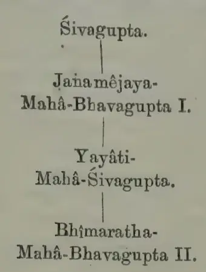
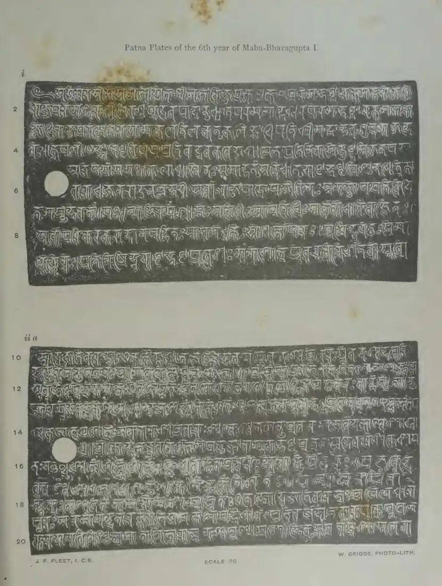
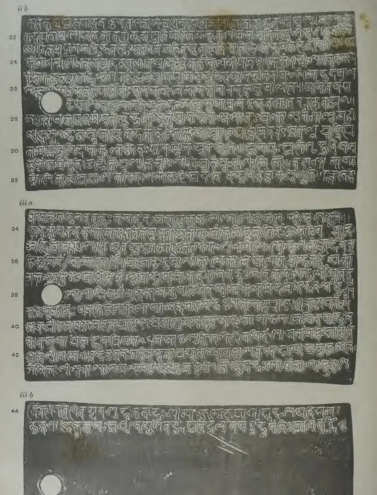
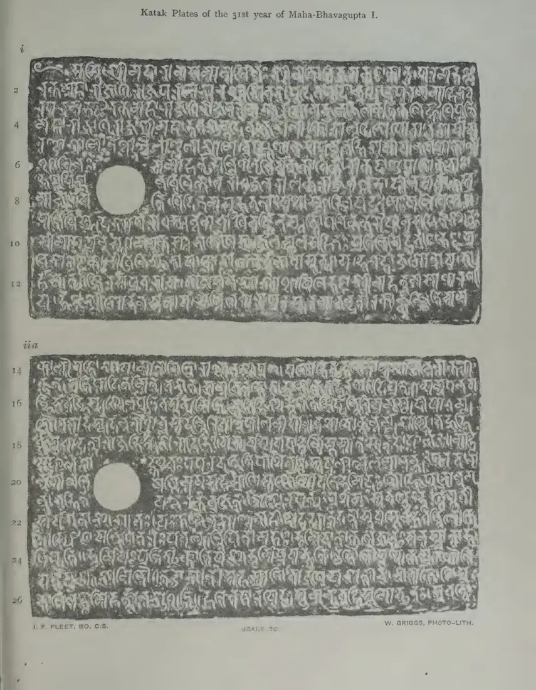
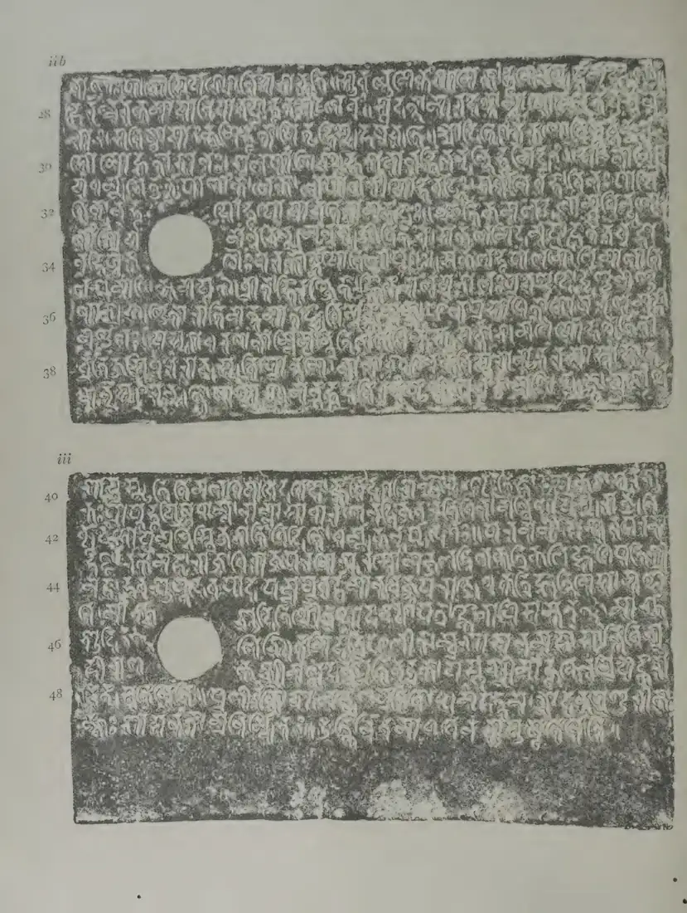
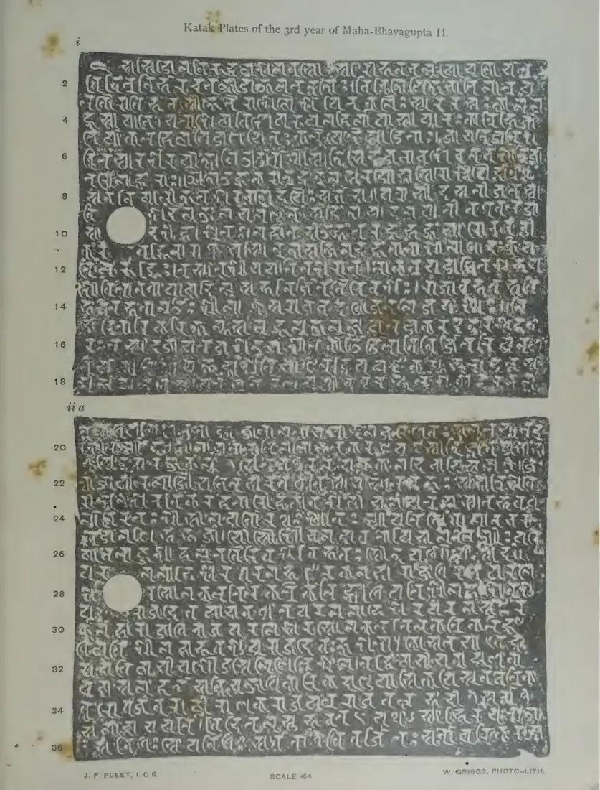
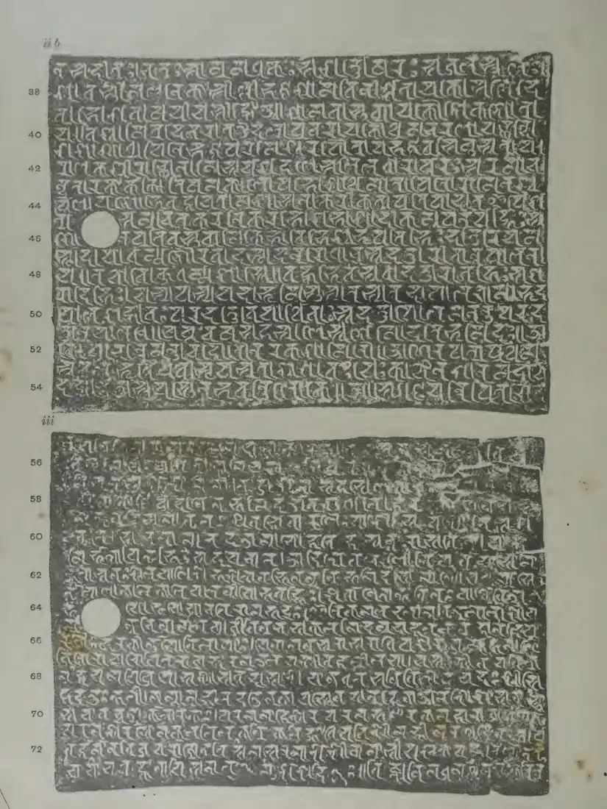

Records of the Sômavaṁśi kings of Kaṭak
RECORDS OF THE SOMAVAMSI KINGS OF KATAK.
By J. F. FLEET, I.C.S., Ph.D., C.I.E.
Of the copper-plate charters which I deal with on this occasion, two, C. and F., are now brought to notice for the first time, I believe; the others are re-edited, partly with a view to giving more correct versions of them, and partly in order to bring the whole series together in one and the same place.
1 Vitṭôllaka is probably the same as the Sanskrit vishṭi, the Telugu reṭṭi and the Kanarese biṭṭi. The designation of the lowest village servant, Veṭṭivádu in Telugu and Veṭṭiyân in Tami, is derived from this word.
2 With the adjective Akshasarakaprâptya compare Vaṭasthalikâpráyṭya in another Valabhî grant; Ind. Ant. Vol. V. p. 206.
3 According to Böhtlingk and Roth's Sanskrit-Wörterbuch, pádávarta is explained by the commentator on Kâtyâyana's Śrautasútra as 'a square foot.' Compare also Dr. Fleet's Gupta Inscriptions, p. 170, note 4.
4 The same expression occurs in another Valabhî grant; Ind. Ant. Vol. IX. p. 238.
Of the latter, the first that was brought to notice is B., one of the set of three charters issued by Mahâ-Bhavagupta I. in his thirty-first year. It was edited in 1876, in the Ind. Ant. Vol. V. p. 55 ff., by Babu Rangalala Banerjea, who propounded the views—(1) that Mahâ-Bhavagupta I. belonged to the dynasty of “the great Guptas,” meaning, apparently, the Early Guptas, or to some branch of it established in the Kalinga country; (2) that E., which record, though not then published, had been examined by him, proves that a king named Yayâti reigned in Orissa when Mahâ-Šivagupta,1 the son of Mahâ-Bhavagupta I., was the king of the three Kalingas; (3) that the kings of Orissa were feudatories of the Guptas, and made all their grants in the names of their paramount masters; (4) that Yayâti is to be identified with a certain Yayâti-Kêsari, who, according to a (supposed) historical account of Orissa, compiled by Mr. Andrew Stirling from two local vamśávalis or genealogical lists of kings and from the Rájacharitra chapter of the Mádlá-Páñji or archives preserved in the temple of Jagannâtha at Purî, and published in the Asiatic Researches, Vol. XV. (1825), pp. 254 to 305, was the founder of the Kêsari dynasty of Orissa, and reigned from A.D. 473 to 520;2 and (5) that the period of Mahâ-Šivagupta, and of the record itself, is determined by this identification.3
Next there was brought to notice E., the charter issued by Mahâ-Šivagupta in the ninth year of Yayâti, i.e. in his own ninth year, which was edited by the same gentleman in 1877, in the Jour. Beng. As. Soc. Vol. XLVI. Part I. p. 149 ff. On this occasion, he again treated Mahâ-Šivagupta and Yayâti as distinct personas; and, in fact, he pointedly emphasised the supposed difference of personality. He repeated the view that the Kêsaris of Orissa acknowledged the Guptas as the paramount power,—i.e. that Yayâti was a feudatory of Mahâ-Šivagupta,—and that the grant was made by Yayâti in the name of his supreme sovereign. He again accepted the period of A.D. 474 to 5264 for Yayâti. And, taking Janamêjaya to be simply an “ancestor” of Yayâti,—not his father; though this is the relationship which is distinctly stated in the record, and which was acknowledged by the Babu himself in his translation of it,—he identified Janamêjaya with a person of the same name who, according to tradition, founded the city of Katak-Chaudwâr;5 and he placed him seven generations before Yayâti, and allotted him to the earlier part of the first century A.D.
In the same year, and in the same volume, p. 175 ff., A., another of the charters issued by Mahâ-Bhavagupta I., and dated in the sixth year of Janamêjaya, i.e. in his own sixth
1 Called simply ‘Šivagupta’ by the Babu, who did not notice the point that the father of Mahâ-Bhavagupta I. was Šivagupta, and his son was Mahâ-Šivagupta. So also, except in the translation, he called Mahâ-Bhavagupta I. simply ‘Bhavagupta.’
2 According to Mr. Stirling, he commenced to reign in A.D. 473 after the end of Šaka-Sarvat 396 (loc. cit. p. 264), and died A.D. 520 (p. 266).—Since Mr. Stirling’s time, the records of the temple of Jagannâtha have been twice investigated (see Sir William Hunter’s Orissa, edition of 1872, Vol. I. pp. 198, 199, and notes 43, 44); in 1868 by Dr. Rajendralala Mitra, whose arrangements for publication, however, were prevented by the priests from being carried out; and at an earlier date by Bhabani Charan Bandopadhyaya, who published his results in a Bengâlli work entitled Purushôttamachandrikâ. Sir William Hunter says that this account “is fuller “and more carefully done than Stirling’s excellent sketch;” he is “inclined to believe that all the really historical “matter has now been extracted;” and he has given the list of kings and dates, thus made cut, from B.C. 3101 to A.D. 1871, with the leading features of the statements made in connection with them, in his Orissa, Vol. II. Appendix VII. pp. 183 to 191. This account agrees with Mr. Stirling’s account, in representing Yayâti-Kêsari as the founder of the Kêsari dynasty. The period that it gives for him, however, is A.D. 474 to 526,—differing slightly from the period arrived at by Mr. Stirling; and there are differences in some of the other dates also.
3 He recognised, indeed, on palaeographic grounds, that the records “cannot be very ancient” (loc. cit. p. 60). But he said distinctly that he supposed Mahâ-Šivagupta “to have been a contemporary of Yayâti-Kêsari, who reigned between the years 474 and 526 A.D.” (for these dates, see the end of the preceding note).
4 See the preceding two notes.
5 i.e. “the four-gated Kaṭak.” It would appear that the original city was Chaudwâr or Chaudwârâ, on the north bank of the Mahânadî; and that the present town Katak, rulgo ‘Cuttack,’ on the south bank, is of later origin.
year, was edited by Babu Pratapachandra Ghosha, who, however, abstained from any historical disquisitions; he contented himself with saying that it was not evident from the record what Janamêjaya had to do with the grant, and that, until Janamêjaya could be identified, it was needless to make any attempt to fix the date of the record.
And finally, D., another of the set of three charters issued by Mahâ-Bhavagupta I. in his thirty-first year, was edited in 1882, in the Jour. Beng. As. Soc. Vol. LI. Part I. Proceedings, p. 9 ff., by Dr. Rajendralala Mitra, whose remarks on it furnish about as good an illustration as could well be sought, of the cumulative results of careless and uncritical work, following blindly in the track of writers who have handled matters that they could not deal with properly. He took Babu Rangalala Banerjea as referring to “the later Gupta kings of Magadha;” evidently, simply because, as he himself asserted (loc. cit. p. 10),—without the slightest foundation in fact for the second and third assertions,—“we know from the Aphsad inscription “that there was a long line of Gupta kings” (i.e. the Guptas of Magadha) “in Behâr, and they “called themselves the lords of the three Kalingas, and that Bhavagupta was one of them.”1 He misread the name of the king as ‘Mahâdêvagupta,’ and represented the person, whose existence he thus arrived at, as a grandson of Mahâ-Bhavagupta I. himself. Taking an expression, towards the end of the record, which describes Mahâ-Bhavagupta I. as a very god Kandarpa (Kâmadêva) in respect of religion, as giving the name of the person who made the grant, and endorsing an assertion of Babu Rangalala Banerjea that the Śâstras enjoin that sovereign kings only had the power of granting land in perpetuity, he arrived at the conclusion that “the donor was ostensibly Mahârâja Mahâdêvagupta, son of Śivagupta, but really a petty “chief of Kôsala, of the name of Kandarpadêva, who, not being himself competent, according to “the Smriti, to grant land, which theoretically belongs to the paramount power, invokes his name, “and dates it after him.” He followed Babu Rangalala Banerjea, in accepting A.D. 474 to 526 as the period of Yayâti, the alleged founder of the Kêsari dynasty according to the local annals, and in making him a contemporary of Mahâ-Śivagupta. And he placed the supposed Mahâdêvagupta, and the date of his record, about the beginning of the sixth century A.D.
The mistaken views summarised above are based on three radical errors. One is the failure to recognise what seems clear enough even from A. and E.; viz. that Janamêjaya and Yayâti were Mahâ-Bhavagupta I. and Mahâ-Śivagupta themselves. Another is the perfectly unsustainable assertion that none but paramount sovereigns could make grants of land, whether in perpetuity or otherwise; as the result of which, it is to be taken that the supposed feudatory prince Janamêjaya, for instance, issuing charter A., had all the essential part of it worded as if it were issued by a totally different person, viz. his supposed paramount sovereign Mahâ-Bhavagupta I. And the third is the blind acceptance of the local annals, and of the period which they purport to establish for Yayâti, the alleged founder of the Kêsari dynasty.
As regards the last of these mistakes,—it should surely be almost unnecessary to say that, even if any germs of ancient historical truth at all are contained in the annals in question, there is certainly nothing in them that can be accepted without complete corroboration from outside. Mr. Stirling, indeed, while questioning everything before Yayâti-Kêsari, looked upon the accounts as reliable from that point; he considered that the “later annals assume an “air of authenticity about the date of the accession of the Kêsari-Varnśa, 473 A.D., prior to “which the accounts are so replete with obvious falsehoods, contradiction, inconsistency, and “anachronism, as to be equally unintelligible and unworthy of notice” (Asiatic Researches, Vol. XV. p. 256). But he shewed no reasons for this differentiation, which was plainly based on
1 But the Aphsad inscription (Gupta Inscriptions, p. 200), and the other records of the same family (id. pp. 208, 211, 213), make no mention whatever of the Kalinga country, and contain no such name as Bhavagupta, which, in fact, does not occur in any record known to me, apart from these Katak charters. And the asserted details are not even to be found in Dr. Rajendralala Mitra's own rendering of the Aphsad record (Jour. Beng. As. Soc. Vol. XXXV, Part I. p. 267).—I suppose he was thinking of Mâdhavagupta, who was one of the Guptas of Magadha.
nothing except that, after the mention of the traditional king Vikramâditya, who is represented as having reigned for a hundred and thirty-five years,— in order to fill up the chronological interval between the commencement of the Vikrama era (B.C. 58) and the commencement of the Śaka era (A.D. 77),—“the era of Śalivâhana” (i.e. the Śaka era), “which dates its “commencement from A.D. 77 in Orissa,1 is used in all the accounts, and we now come to reigns “of a probable and moderate duration, the first dawning of an approach to the authentic period “of the native history” (ibid. p. 262). And he simply attached to the annals of Orissa a value which neither they, nor any other Hindû records of the same kind that have ever yet come to light, can possibly possess. It is almost needless to say that the annals in question do not include any such names at all as Śivagupta and Bhavagupta; these being real historical names, it is not to be expected that they would be found in such documents. They undoubtedly do preserve a reminiscence of Janamêjaya-Mahâ-Bhavagupta I. and Yayâti-Mahâ-Śivagupta, in the names of Yayâti-Kêsari, and of Janamêjaya-Kêsari which also occurs in the list of the Kêsari kings;2 for, otherwise, there is no reason why such purely Purânic names should crop up in a series of mostly quite ordinary names. But they do so under completely erroneous and anachronistic circumstances. According to the annals, Yayâti-Kêsari was the first of his dynasty, and was succeeded by ‘Suraj’ or ‘Sûrjya’-, i.e. Sûrya-Kêsari, and Janamêjaya-Kêsari came long after him, in the period A.D. 754 to 763; whereas, the copper-plate charters shew that Yayâti-Mahâ-Śivagupta was the third king of his line,—that Janamêjaya-Mahâ-Bhavagupta I. was his predecessor and father,—and that he was succeeded by Bhîmaratha-Mahâ-Bhavagupta II., of whom we possibly have a perverted reminiscence in the name of the alleged Bharata-Kêsari who is placed next after Janamêjaya-Kêsari, in the period A.D. 763 to 778. And,—even apart from what I shall shew below, as to the period to which the real Yayâti-Mahâ-Śivagupta must be referred,—the annals unconsciously betray themselves, by connecting with the name of Yayâti-Kêsari events which can have happened only several centuries at least after the period which they would establish for him. They say that, just before him, some people called Yavanas ruled over Orissa for a hundred and forty-six years, and that he established his own dynasty by expelling the Yavanas (ibid. pp. 264, 265, and Orissa, Vol. II. Appendix VII. p. 185) as I will shew further on, though the Yavanas here are the Early Gupta kings, the term elsewhere means, all through the annals, the Musalmâns,3 and the statements connected with Yayâti-Kêsari mix up the Early Gupta rule with the Musalmân conquests: if then, the statements are based on no actual fact, but simply on what took place generally in Northern India, they cannot refer truly to any time anterior to the period of Mahâd of Ghazni (A.D. 1001 to 1030), who, moreover, did not penetrate as far as Orissa; while, if they commemorate an actual conquest of Orissa, they cannot possibly refer to any time anterior to A.D. 1567-68, when Sulaimân, king of Bengal, defeated the last independent king of Orissa and practically subjugated the province.4
As regards the second mistake,— whatever the Śâstras may say, or seem to say, the assertion that none but paramount sovereigns could make grants of land is without any basis of fact: any number of epigraphic instances to the contrary could be quoted; and, though there are instances enough of feudatories and officials making grants with the permission of their supreme kings, yet even then the grants were always made by them in their own names, and not a single authentic case can be quoted of a feudatory or official assuming the name of his king or other superior authority for the purpose of issuing a charter.
1 i.e. apparently, the people of Orissa use the current Śaka years.
2 Orissa, Vol. II. Appendix VII. p. 186.— Mr. Stirling did not enumerate all the Kêsari kings; and so this name is not to be found in his account.
3 It is sufficient to note here that, in the Chitôrgadh inscription of A.D. 1428 or 1429, Fîrûz Shâh or Fîrûz-ud-dîn Taghlaq, king of Delhi (A.D. 1351 to 1388), is called “the Yavana king Pêrôja” (Ep. Ind. Vol. II. p. 410).
4 See the Imperial Gazetteer, Vol. X. p. 430.
The Sômavamśi Kings of Katak.

And as to the first of them, the facts are these. A. names, in the formal part of the record, a paramount king named Śivagupta, and his successor Mahâ-Bhavagupta (I.) who made the grant; it is dated in the sixth year of a paramount king named Janamêjaya; and it ends with a verse in praise of this latter king, who, like Mahâ-Bhavagupta (I.), is attributed to the Lunar Race. E. opens by mentioning in verse a king named Janamêjaya, and his son Yayâti; then, in the formal part of the record, it names a paramount king named Mahâ-Bhavagupta (I.), and his successor Mahâ-Śivagupta who made the grant; and it is dated in the ninth year of Yayâti, to whose name there are here attached the paramount titles, just as in the case of Mahâ-Śivagupta, and who, like Mahâ-Śivagupta, is here described as belonging to the family of the Moon, and as being the lord of the three Kalingas. And F., after mentioning in the opening verses three kings named Janamêjaya, Yayâti, and Bhîmaratha, names, in the formal part of the record, the paramount king Mahâ-Śivagupta, and his successor Mahâ-Bhavagupta (II.) who made the grant; and it is dated in the third year of Bhîmaratha, to whose name there are here attached just the same paramount titles which are attached to the name of Mahâ-Bhavagupta (II.), and who, just like Mahâ-Bhavagupta (II.) in this record and Mahâ-Śivagupta in E., is here described as belonging to the family of the Moon, and as being the lord of the three Kalingas. It is true that the fact is not specifically stated. But it is self-evident that we have the names of four kings, Śivagupta, Mahâ-Bhavagupta I., Mahâ-Śivagupta, and Mahâ-Bhavagupta II., each the father of his successor, and that Janamêjaya, Yayâti, and Bhîmaratha were simply fanciful names of the second, third, and fourth of them. They were paramount kings of the Kôsala country; for, the charters issued in the thirty-first year of Mahâ-Bhavagupta I. style him Kôsal-êndra or “lord of Kôsala” and convey villages in different divisions of the Kôsala territory,—Mahâ-Śivagupta’s charter conveys a village in, plainly, Dakshiña-Kôsalâ or Southern Kôsala,—and the charter of Mahâ-Bhavagupta II. conveys a village in yet another division of Kôsala: and, unless one of their titles, tri-Kaling-âdhipati, was simply a meaningless attribute, they were also paramount kings of the territory that was known as the three Kalingas, and which included evidently Katak or ‘Cuttack,’ and probably the whole of Orissa. Their capital seems to have been Katak, which is mentioned by name in A., B., C., and D., as the place from which those charters were issued: E. and F., however, were issued from other towns named Vinitapura and Yayâtinagara, both, like Katak, on the Mahânadî; these places have not been identified;1 but it appears possible that the names are fanciful names for Katak itself. And they claimed to
1 Regarding the point that Yayâtinagara cannot be the modern Jâjpur, see page 355 below.
belong to the Sômavainśa or Sômakula, the Lunar Race. Their dynastic name proper has not yet come to light. But their paramount titles,— Paramabhaṭtāraka, Mahārājādhirāja, and Paramēśvara,— were not the exclusive attributes of the Guptas, as Babu Rangalala Banerjea thought. And, even apart from the fact that their period is plainly too late, the termination of their names does not require us to allot them to the lineage of the Early Guptas, or even of the later Guptas of Magadha; and there appears no reason whatever for our doing so.
There remains for consideration the period to which these kings may be allotted. And, as their records are not dated in any era, and their names have not been met with in any other records so dated or capable of being assigned to an exact date by means of a record so dated, this question can only be dealt with approximately, on palæographic grounds. The results, however, are sufficiently definite, within certain limits.
The characters used in these charters are Nāgarî. Partly because of the locality to which the charters belong, and partly because of certain unique forms of the vowels é, ai, and au, which will be noticed again further on and which are radically different from any forms to be found in records from Southern and Western India, they must unquestionably be allotted to the northern class of Nāgarî alphabets. And they exhibit more or less of a tendency towards a particular type of that class of Nāgarî alphabets, to which, rightly or wrongly, the special name of Kuṭila has come to be attached.1 A comparison of the records, one with each other, shews this peculiarity most plainly in B., C., D., and E. And characters of apparently much the same type with the present ones, as exhibited in these four records, are carried back to about the middle of the seventh century A.D. by the Aphsaḍ inscription (Behâr) of Ādityasēna (Gupta Inscriptions, p. 204, Plate). But closer inspection shews that the present characters are very much later than those of the Aphsaḍ record; contrast, for instance, the initial ā of the Aphsaḍ inscription, in āsīd, line 1, and the k, j, t, m, r, and s, in kaṭakō, jayinā, madāndha, vidyādhar, and sahasra in the same line, with the initial ā in ākshéptā, line 20, and the k, j, t, m, r, and s, in kaṭakāt, samāvāsita, vijaya, and parama, line 1, of B., and still more with the same characters as exhibited in the same words in A. lines 1 and 27. From these letters alone, it is evident that a very considerable interval must have elapsed from the period of the Aphsaḍ record to the time when these charters were engraved. And, reverting further on to a few individual letters, I will deal first with some other features which, endorsing the above result, help better to fix the approximate period of these charters. In making comparisons, I shall quote records, with published facsimiles, which come from the nearest possible localities to the part of the country to which the charters under consideration belong.
A point which will at once attract attention, as suggestive of a certain amount of antiquity, is the use of numerical symbols, for 'three' and 'ten' in E. line 65. But we are
1 This name was first used by Prinsep, in 1837 (Jour. Beng. As. Soc. Vol. VI. p. 779), on the authority of the words kuṭil-āksharāṇi vidushā, which occur towards the end of the Dēwal inscription of the Chhinda prince Lalla. In re-editing this record, Dr. Bühler (Ep. Ind. Vol. I. p. 76) has expressed the opinion that the words mean, not that the writer was acquainted with letters called Kuṭila or 'crooked letters,' but that he was skilled in reading 'badly written and difficult; documents. I think, however, that the analogous expressions quoted by me from other records in noticing the words used in the Dēwal inscription (Gupta Inscriptions, p. 201), make it quite clear that, whatever it may actually mean, the expression refers to the characters in which that record itself is engraved. And the contrast between them (see the Plate, Ep. Ind. Vol. I. p. 76) and the far more straight, square, and plain characters of, for instance, the 'Deopara' inscription of Vijayasēna (ibid. p. 308, Plate), indicates that the reference must be to the type of them, the peculiarity of which perhaps consists more in the general avoidance of straight lines, than in the tails or bottom twists to the right which appear also in the 'Deopara' inscription and in other records in the square characters.— As I remarked on the same occasion, the expression kuṭil-āksharāṇi does not seem to have been used in the Dēwal inscription with the object of recording a standing name of a variety of the alphabet. But the term Kuṭila fits the type of letters so well, that, as it has been in use for so long a time, there really seems no objection to continue it, as the designation of a variety of the northern Nāgarî alphabet, not as the name of a distinct alphabet.
not compelled to place the record, on this account, before A.D. 794-95; for, the same system was used in the grant (from somewhere in Bengal) of the Mahârâja Vinâyakapâla, the date of which falls in that year (Ind. Ant. Vol. XV. p. 140, Plate). And the force of this feature is impaired by the fact that decimal figures also occur in all the six charters. This latter feature, indeed, does not oblige us to place these records after A.D. 862; for, decimal figures occur in the Dêôgađh inscription (Central India) of Bhôjadêva of Kanauj, of that year (Archæol. Surv. Ind. Vol. X. Plate xxxiii. No. 2). But it points to about A.D. 800, as the earliest possible time for these charters.
The next point to which attention may be given, is the use of the virâma, in conjunction with the full form of t in B. to F., and once in conjunction with the full form of n in B.; this feature, however, being qualified by the use also of final forms of t, n, and m, more or less throughout the whole series. The virâma perhaps occurs with t in samvat, line 6, in the Dêôgađh inscription of A.D. 862.1 It certainly occurs, in conjunction with a half final form of t,—a complete t, except for the absence of the mâtrâ or horizontal top-stroke,—in pañchâsat, line 20 (twice), in the Gwâlior inscription (Central India) of the same king, of A.D. 875-76 (Ep. Ind. Vol. I. p. 160, Plate). It appears in conjunction with the full forms of t and m in the Pehoa inscription (Pañjâb) of Mahèndrapâla, of about A.D. 900 (ibid. p. 244, Plate); see, for instance, sârñgabhrit, line 2, and tâpam, line 3. And it occurs in conjunction with the full forms of t, n, and m in the Khajurâhô inscription (Bundêlkhanđ) of Yasôvarman, of A.D. 953-54 (ibid. p. 124, Plate); see, for instance, varât, line 1, tyâgavân, line 3, and nîrvritim, line 28. So far, therefore, as the use of the virâma is concerned, the present charters need not be placed after A.D. 900. And the use of final forms also might seem to necessitate our placing them before that date. But, though the records mentioned above shew no final forms at all, a final form of t occurs in the word samvat, lines 32 and 33, of the Harsha inscription (Râjputânâ) of Vigraharâja, of A.D. 973 (id. Vol. II. p. 120, Plate); and the Dêwal inscription (North-West Provinces) of the Chhinda-prince Lalla, of A.D. 992-93 (id. Vol. I. p. 76, Plate), shews, e.g. in bhuvam, line 8, a half final form of m,—a complete m, except for the mâtrâ, with a virâma attached to it. And therefore, in spite of the use of final forms, the charters may also, without objection, be placed as late as A.D. 973.
Another instructive feature is the use of the avagraha in E. and F.; properly, in E. line 38, to denote the elision of an initial a after an ô, and incorrectly, in E. line 29, and F. line 35, to mark the absorption of an initial a into a preceding â. This sign does not occur in any of the other records mentioned above. And the earliest other instances of the use of it, that I can quote, are vâşnumôdêta in line 43 of the Barôda grant (Gujarât) of Dhârâvarsha-Nirupama-Dhrutvarâja, of A.D. 834 or 835 (Ind. Ant. Vol. XIV. p. 200, Plate), and vuddhvâssmad in line 25 of the Ujjain grant (Mâlwa) of Vâkpatirâja of Dhârâ, of A.D. 974 or 975 (id. Vol. VI. p. 52, Plate), in both of which places it is used, improperly, to mark the absorption of an initial a into a preceding â, and sîlpêşntarâyah, line 4, dadhêsvasâdam, line 13, and lâñchhitôssir, line 18, where it is used correctly, and śrutvâşnyathâ, line 19, where it is used incorrectly, in the 'Deopara' inscription of Vijayasêna, attributable to the end of the eleventh century A.D. (Ep. Ind. Vol. I. p. 308, Plate). It is a sign which is emphatically opposed to any particular amount of antiquity.
Still more instructive is the use of the fully developed mâtrâs or horizontal top-strokes of the letters, almost all through these charters. In A. and F., this feature is very unmistakable,—plain straight lines being used. In B., C., and D., the upright strokes are capped with triangular tops, cloven on the upper side; the mâtrâs were formed by running
1 The Aphsađ inscription was constructed in such a way as to avoid both the virâma and final forms; except in one word, varayan, line 9, where an anusvâra was wrongly substituted for the n, either as a final, or in saindhi with the following m.
these tops into each other; and the result was, that the mátrás here are not always perfect: but the intention is evident. In E., in which the upright strokes were capped in the same way, many of the letters present a still more disjointed appearance; but there can be little doubt that this was induced largely in the preparation of the lithograph, which is plainly not altogether a mechanical one, and that the intended general style was precisely the same as in B., C., and D. There is, indeed, one letter, ph, in respect of which a distinction has to be drawn between A. and F. on the one side, and B., C., D., and E. on the other: for some reason or other, in the latter four charters,—probably from aiming generally at copying a more antique style,—ph is exceptionally formed, throughout, with only the half mátrá, over the left-hand part of the letter;1 see, for instance, phalam and ásphóṭayanti, B. lines 18, 23, and muktáphala and spháríbhavach, E. lines 19, 1, and contrast these words with aphala and ásphóṭayanti, A. lines 25, 29, and aphala and dattát=phalam, F. lines 49, 50. In other respects, the charters are all in unison: and the facts are as follows,—jh does not occur, and th occurs only subjoined; the kh, g, ñ, n, th, and ś are what may be called round-top letters; the t and dh have no mátrá; the l has a half mátrá, over the upright stroke on the right hand, rather than a full one; and all the other consonants have the full mátrá: among the initial vowels, é, ai, ó, and au are round-top letters, and a, á, i, î, and u have the mátrá; ú does not occur. In dealing with the question of the mátrás, the instructive letters are p, m, y, sh, and s. In the Aphsađ inscription of about A.D. 650, the grant of Vinâyakapála of A.D. 794-95, the Dêògađh inscription of A.D. 862, the Gwálior inscription of A.D. 875-76, and even the Harsha inscription of A.D. 973, these five letters are without the complete mátrá,—having tops on only the left-hand part of them. But the Khajuráhô inscription of A.D. 953-54 presents the fully developed mátrás in the five letters in question, as well as in all the others which admit of it; and they appear also in the Dêwal inscription of A.D. 992-93,2 in the Nanyaurâ copper-plate grant (North-West Provinces) of Dhañgadêva, of A.D. 998 (Ind. Ant. Vol. XVI. p. 202, Plate), and in the Jhûsî grant (North-West Provinces) of Trilòchanapála, of A.D. 1027 (id. Vol. XVIII. p. 34, Plate). The transitional period appears to be illustrated by the Pehoa inscription of about A.D. 900, where, for instance, in patau, line 1, ékatám, line 1, ódayaħ, line 6, gatéshu, line 1, and sadvritta, line 11, the p, m, y, sh, and s distinctly have only the half mátrá over the left part of the letter, though in the majority of cases the mátrás of even these five letters are complete; and still more pointedly by the Asnî inscription (North-West Provinces) of Mahípála, of A.D. 916-17 (Ind. Ant. Vol. XVI. p. 174, Plate), which very clearly shews the letters in question both with and without the complete mátrá. And the result from this feature is, that the present charters need not be placed after A.D. 950, but can hardly be placed before A.D. 900.
An examination of individual characters leads to much the same result; except that the forms of k and ph, which represent almost the last stage before the development of the modern forms, seem to necessitate an appreciably later period. A similar instance of the k with the markedly round shape of the left-hand part of it which is exhibited in these charters,—see, e.g., kaṭakát, A. line 1, and paramabhaṭáraka, B. lines 1, 2,—occurs, by some chance or other, in the word árka, line 21, of the Gwálior inscription of A.D. 875-76; and this instance must probably be taken as shewing that the form was known then, though it had not been introduced into epigraphic use: but, in the remainder of that record, in the Dêògađh and Asnî inscriptions, and even in the Harsha and Dêwal inscriptions, the k is decidedly of the pointed type: the round type is followed first in the Pehoa inscription of about A.D. 900; and it re-appears in the Khajuráhô inscription, and in the Nanyaurâ and Jhûsî grants. As regards the ph with
1 In dattát=phalam, E. line 45, where the ph has the complete mátrá, the engraver's tool seems to have slipped.
2 Some of the strokes are rather thin; with the result that the complete mátrá is sometimes wanting, or in the lithograph seems to be so. But it appears clear that the fully developed mátrás were intended throughout.
the complete mátrá, as exhibited in aphala, A. line 25,—(the same word in F. lines 49, 50 shews essentially the same type, but a later form in which the right-hand stroke is continued down to the bottom line of the writing),1—the same type, and almost the same form, occurs in the Pehoa inscription of about A.D. 900, in sat-phalâ, line 15, and dviréphô, line 19: the only clear difference in form is, that in the present charters the stroke to the right and downwards, which turns p into ph, is left open, whereas in the Pehoa inscription it is turned back on to the upright stroke from which it starts, as also, for instance, in the word phalam, lines 26, 29, in the grant of Vâkpatirâja of A.D. 974 or 975; but perhaps the Pehoa inscription shews also,—especially in the word dviréphô,—in a rudimentary shape, the continuation of this stroke, downwards in a slanting direction to the right, which produced the next form of this letter before the final development of the modern form, and which is illustrated very plainly in the Ujjain grant of Bhôjadêva of Dhârâ, of A.D. 1021 or 1022, in the word phalam, line 14 (Ind. Ant. Vol. VI. p. 54, and Plate). The other records, quoted above, however, shew the antique ph of the Aphsad inscription and earlier records, which is of a very different type; and so does even the Pehoa inscription, when the ph is in conjunction with s,—see sphurita, line 2, sphâram, line 8, sphârîbhavat, line 9, sphuran, line 11, and sphârjat, line 14. The antique ph appears again in the Nanyaurâ grant (North-West Provinces) of Dêvavarmadêva, of about A.D. 1050 (Ind. Ant. Vol. XVI. p. 202; Plate), in phalam, line 16. But the grant of Chandradêva and Madanapâladêva, of A.D. 1097 (Ind. Ant. Vol. XVIII. p. 12, Plate), reverting, in the word phalam, line 20, to the later type, shews also a form which is later than the form of that type used in the Pehoa inscription, and which was arrived at by making the stroke to the right and then downwards start, not from the top, but from the side of the p, and also by continuing it markedly still further down in a slanting direction to the right, without closing it in at all on the side-stroke from which it starts. This last form,—evidently the latest stage before the final development of the modern form,—appears also in the grant of Madanavarmadêva, of A.D. 1134 (Ind. Ant. Vol. XVI. p. 208, Plate), in phalam, line 19; and in all the later records which I have examined. And the transitional period, when it was developed, seems to be marked by the Gwâlior inscription of Mahîpâla, of A.D. 1093 (Ind. Ant. Vol. XV. p. 36, Plate), which shews the antique type in ôtphulla, line 1, and phalam, line 11, but the later type, and the later form of that type, in sphurati, line 2, sphuṭa, line 12, and sphatika, lines 38 and 39. This third form of the later type is undoubtedly of later origin than the form which appears in the present charters. But the form of the later type which we have in the Pehoa inscription of about A.D. 900 seems to be as certainly of earlier origin than the form used in the present charters; for we have it in Western India in records of A.D. 754 and 807 (Ind. Ant. Vol. XI. p. 112 and Plate, gulpha, text line 12; and p. 160 and Plate, phalam, text line 57):
Of the vowels,—a, â, u (â does not occur), and ô do not present any matter for special comment; they are simply developments of the types which occur through all the records mentioned above. The form of i,—which, with an addition, makes also i,—is a very peculiar one. In A. lines 11, 22, 37, 39, 42, the short i is denoted by a straight line (in fact a mátrâ) with two circles below it; in B. line 32, the straight line is turned into a wavy line (and so also in C. line 33, and D. line 36); in E. lines 39, 57, the circles are still preserved, but (if the lithograph shews the letter completely) the straight line or mátrâ is broken up into two disconnected points; and in F. line 64, the top of the letter is a wavy line of another shape, and there are semi-circles, instead of circles, below it: the long i occurs only by mistake for i; in A. lines 16, 21, it is the short i of that record, with, below it, a twirl from the left to the right, then downwards, and then upwards to the left; in F. line 44, it is made by a wavy line, two circles below it, and, below
1 The type used in B., C., D., and E., is the same with that used in A.; but there is the difference in form already noted, that the mátrâ is not complete.
them, a short line slightly curved downwards from left to right. Probably, the standard forms, of both the short and the long vowel, are those which we have in A., and the others are only fancy modifications of them. But the type is essentially the same throughout. It differs totally from the type followed in all the other records quoted above, and exhibited in them by the short i, which consists of two circles with a twirl, of varying shapes, below them.1 I do not find any close resemblance to it anywhere else.2 But it may have been developed from the short i of the earlier Eastern Chalukya records, which was formed by a wavy line or two semicircles joined (easily capable of being developed into the straight line of A.), with two dots or circles below it (see, for instance, Ind. Ant. Vol. XIII. p. 214 and Plate, ih=aijaté and iv=átipútam, text line 40); the long i and the short u, however, have no connection at all with the long i and the u, long or short, of the earlier Eastern Chalukya records (see, for instance, id. Vol. VII. p. 17, and Plate, ísánatah and uttaratah, text lines 54, 55, and Vol. XIII. p. 186, and Plate, úri and úru, text lines 17, 18, 20, 24). The initial é, which, with an addition, forms ai (see éka, étébhyő, and aivuli, A. lines 10, 12, 18), is a still more remarkable letter. It has no connection with the original triangular character, with the apex placed downwards, from which were derived the forms which appear in the Gwálior, Pehoa, Asní, Khajuráhó, Harsha, Déwal, and Nanyaurâ records;3 nor with the é of the earlier Eastern Chalukya records (see, for instance, Ind. Ant. Vol. VII. p. 17, and Plate, étad, line 55, and Vql. XIII. p. 214, and Plate, ékádaša, line 27): and it can hardly have been developed from even another form of the é which we meet with in Gujarát (id. Vol. XII. p. 159, and Plate, élápur, line 14). In Prinsep's Antiquities, Vol. II. pp. 40, 41, Plate xxxix., Mr. Thomas has given both the é and the ai, as we have them in A., as Bengálí characters of the tenth century A.D.,—meaning really the eleventh century, as is evident from the fuller heading of his eighth line of alphabets in the first half of his Table. But I have not been able to verify his authority for this,—an inscription from 'Adisur,' supposed to be dated A.D. 1065. As far as my knowledge goes, the forms of é and ai, used in A., are unique in epigraphic records. And, by Mr. Thomas himself in another Table (loc. cit. p. 53), and by a work entitled Grammatography4 (see page 45 of it), forms which are practically identical with these, are given as the modern Bengálí forms. The initial au, which is but very seldom met with, occurs in audalya, F. line 40. It is different in form from, but it may possibly be a development (and, if so, it is certainly a later form) of, the au which we have in auttarésvarah in line 22 of the Harsha inscription of A.D. 973. As in the case of the é and the ai, the form which we have here is, as far as my knowledge goes, unique in epigraphic records. And, while, as in the case of the é and the ai, Mr. Thomas has in his first Table allotted this form to the tenth century A.D.,—meaning really the eleventh century,—in his second Table he has given a practically identical form as the modern Bengálí form; and the Grammatography does the same.
1 Curiously enough, if we remove the straight line which forms the top of the long i as exhibited in A., we have, exactly, the short i of the Déógadh, Gwálior, Harsha, Déwal, Nanyaurâ, and Jhúsí records. But this can be only a chance coincidence.
2 The Chicacole Gañga grant of Satyavarman (Ind. Ant. Vol. XIV. p. 10, and Plate; the genuineness of this record is open to question) presents an equally peculiar form of the short i,—exactly an inversion of the i exhibited in A.,—two circles at the top, and a straight or slightly curved line below them (see iti, line 20, and idántm, line 22). The only approximation that I can find to this, is the i of iva in line 1 of the Kadí grant (Gujarát) of Múlarája I., of A.D. 986, where the vowel is formed by two semicircles, with a wavy line below them (Ind. Ant. Vol. VI. p. 192, Plate); but throughout the rest of that record the form is the usual one,—two semicircles, with a twirl below them.
3 The Chicacole Gañga grant of Dévèndravarman (Ind. Ant. Vol. XIII. p. 274, and Plate; the genuineness of this record, also, is open to question) shews an exact inversion of this original form,—a triangle with the apex placed upwards (see évam, line 23).
4 Based on the German compilation of F. Ballhorn, and published (1861) by Trübner & Co.
The general result of the palæographic considerations, taken altogether, is, that these records cannot possibly be placed before A.D. 900. They may belong to any later period But, on the whole, I should say that the characters are of the eleventh century, and that the kings mentioned in them are to be placed somewhere between A.D. 1000 and 1100.
* * * *
The palæographic considerations compel us to discard a somewhat tempting identification which was made by General Sir Alexander Cunningham, and the adoption of which was contemplated by myself before I came to look fully into the matter. A copper-plate grant from Râjim in the Râypur District, Central Provinces (Gupta Inscriptions, p. 291), gives us the names of Indrabala, of the Pânđuvamśa or race of Pânđu,—his son Nannadêva,—and Nannadêva's adopted son, the Râja Tîvaradêva or Mahâśiva-Tîvararâja, a feudatory prince of the Kôsala country. An inscription at Sirpur in the same district (Ind. Ant. Vol. XVIII. p. 179), which supplies the name of Indrabala's father, Udayana, and tells us that he was of the lineage of the Moon,—(to which the race of Pânđu did belong),—carries the genealogy two steps further, through Chandragupta, son of Nannadêva, and through Chandragupta's son Harshagupta, to a prince named Bâlârjuna-Šivagupta, son of Harshagupta, who evidently held the feudatory government of the territory round Sirpur. And Sir Alexander Cunningham (Archæol. Surv. Ind. Vol. XVII. pp. 17, 85, 87) identified this Bâlârjuna-Šivagupta with Šivagupta, father of Mahâ-Bhavagupta I.; and also, accepting, like the other writers who have been mentioned above, the local annals, and failing, like them, to see that Janamêjaya and Yayâti were, not feudatories of Mahâ-Bhavagupta I. and Mahâ-Šivagupta, but those persons themselves, he arrived, from the date which the local annals purport to give for Yayâti-Kêsari, at the dates of A.D. 319 or 325 for Indrabala,—A.D. 350 for Nannadêva,—A.D. 375 for Tîvaradêva and Chandragupta,—A.D. 400 for Harshagupta,—A.D. 425 for Šivagupta,—A.D. 450 for Mahâ-Bhavagupta I. and his supposed contemporary Janamêjaya,—and A.D. 475 for Mahâ-Šivagupta and his supposed contemporary Yayâti. The erroneous nature of the dates thus arrived at has already been shewn, so far as the Šivagupta of the present charters and his successors are concerned. We are dealing now only with the identification of the two Šivaguptas. It appeared to be a very plausible one; for, Mahâ-Bhavagupta I., and his son and grandson, also possessed the Kôsala country; and the absence of the prefix mahâ, and of a second fanciful name, in the designation of his father, seems to suggest that a sudden rise in the status of the family occurred just then,—in short, that Šivagupta, having been at first only a feudatory prince of Kôsala like Tîvaradêva, subsequently became powerful enough to seize the paramount sovereignty of that country, and perhaps also of the Kalinga territories. But, though I fully agree with Professor Kielhorn (Ind. Ant. Vol. XVIII. p. 179) that the Râjim grant is at any rate not older than A.D. 700, and that the Sirpur inscriptions may be placed in the eighth or ninth century, still, the palæographic evidence seems to render impossible the identification that was made by Sir Alexander Cunningham. Lithographs have been published of the edited inscription of Šivagupta, the son of Harshagupta, and of other records which mention him and his father (Archæol. Surv. Ind. Vol. XVII. Plates xviii. A. and B., and xix. C.). The original records evidently have the p, m, y, sh, and s with only the half mâtrâ, throughout. The k is of the pointed type. And another feature stamps them as belonging to even an earlier period than that which may be established by these two characteristics; the m has, not only the half mâtrâ, but also the straight arm to the left, instead of the loop which appears in the present charters and in all the records which have been quoted above, from the Dêògadh inscription of A.D. 862 onwards,! and which is carried
1 In the Gwâlior inscription of A.D. 875-76, indeed, the exact form of this feature is rather that of a solid button than of a loop with a hollow centre; but the type is the same.—In the lithographs of the Sirpur inscriptions, the m appears with the loop twice, in A. line 1 and B. line 12; but it seems tolerably certain that these instances are only mistakes made in preparing the hand-drawings from which the lithographs were made.
back even a century earlier by the Dighwâ-Dubaulî grant (Bengal) of the Mahârâja Mahèndrapâla, of A.D. 761-62 (Ind. Ant. Vol. XV. p. 112, Plate; see, for instance, mahârâja, line 2, and dêvyâm=utpannah, line 4). The j and t, also, as presented in the Sirpur inscriptions, are much more antique than the forms which we have in the present charters. And, even if a somewhat earlier period, than that which I have arrived at, should be hereafter established for the Śivagupta and his successors of the present charters, the palæographic changes in so many details appear more than can possibly be covered by the lapse of a single generation.
* * * *
The local annals of Orissa, mentioned in the preceding remarks, have been taken so seriously, and so much interest has been attached to the question of the identity of the Yavanas who are mentioned in them, that it is necessary to do more than simply dismiss them with only a broad statement of their general want of value, amply supported though it is in the case of Yayâti-Kêsari, and with the curt assertion, borne out though it is by at least one certain epigraphic instance, that the Yavanas are simply the Musalmâns of Northern India of the period A.D. 1001, or later, and onwards. The alleged facts and dates recited in the annals have all been accepted as history or “the mile-stones of history” by Sir William Hunter in his Orissa (see, in particular, Vol. I., edition of 1872, chapter V. p. 198 ff.), from which the leading features have been reproduced in his article on Orissa in the Imperial Gazetteer of India, Vol. X. p. 428 ff.:1 and, in the other matter, his conclusion was that by the name ‘Yavana’ the annals mean the Greeks; and his line of argument (Orissa, Vol. I. pp. 207 to 214) appears to have been,—the Epics and Purânas enumerate the Yavanas in the list of foreign or non-Âryan races on the western frontier of India; through their spirit of enterprise, which led them into various part of Asia, the Ionian Greeks became known at an early period to the Persians, of whose empire, in fact, one body of them formed a part; the name Ionian was, thus, well known to the Persians, and came to be applied by them to the whole Greek race; the appellation was made known to the Hindûs by the Persian expedition sent by Darius to the Indus in the sixth century B.C.; by the Hindûs, the name “Iov” would be naturally transliterated by ‘Yôna,’ which is the contracted form of ‘Yavana;’ from after the date of Alexander’s expedition into the Pañjâb at the close of the fourth century B.C., the term ‘Yavana,’ in Hindû literature, applies unmistakably to the Greeks; the inroads of Alexander and Seleucus left in the Pañjâb a residual element of these Greeks, which soon inevitably began to migrate southwards;2 their presence in the Gangetic valley is proved by a
1 His Orissa was published twenty-two years ago. And the article on Orissa in the Imperial Gazetteer was last issued, in the second edition, eight years ago. I do not find any quotation of the alleged facts and dates of the annals of Orissa in The Indian Empire, the new and revised edition of which was issued last year,—apparently because there was no occasion to quote details of that kind; but the results arrived at previously appear to be endorsed up to date by the remark (p. 220; in the chapter on the Greeks in India, and just after mention of the fact that the term Yavana originally applied to several non-Brâhmanical races, and especially to the Greeks) that “the Orissa chroniclers called the sea-invaders from the Bay of Bengal, Yavanas, and in later times the term “was applied to the Musalmâns,”—to which is attached a reference, in a footnote, to Orissa, Vol. I. pp. 25, 85, and 209 to 232 (ed. 1872).—I am dealing, of course, only with the Yavanas of the annals of Orissa, who are quite distinct from the Greek-Yavanas.
2 For clear traces of Yavanas, sporadically, in Western and Southern India,—in Kâthiâwâd, in the Nâsik District, and at Dhênukâkata (Amarâvati),—see Ind. Ant. Vol. XXII. pp. 194, 195.—Sir William Hunter (Orissa, Vol. I. p. 218) has quoted Dr. Bhau Daji as the authority for a list of seven Yavana princes who ruled in Central India from (it is supposed) the fifth century A.D. to about the ninth. These, however, are simply the Vâkâtaka Mahârâjas of the Chammak and Siwauî charters (Gupta Inscriptions, pp. 235, 243) and the Ajantâ inscription (Archæol. Surv. West. Ind. Vol. IV. p. 124). The first of them was Vindhyaśakti. This person was identified by Dr. Bhau Daji with the Kailakila-Yavana king Vindhyaśakti of the Vishṇu-Purâṇa (Wilson's translation, Hall's edition, Vol. IV. p. 210). But there are absolutely no grounds for this identification.
statement of the grammarian Pânini, who, writing in [it is supposed] the second century B.C., and referring to occurrences which he himself might have seen, says that the Yavanas laid siege to Oudh and besieged the Mâdhyamikas; the Mâdhyamikas, who were Buddhists, were the people of the kingdom of Magadha or Behâr where Buddhism had become the royal religion under Aśôka in the third century B.C.;1 and it was through this kingdom of Magadha or Behâr that the Greeks found their way into Orissa. But, like the Koṅgudéśa-Râjâkkal (see p. 170 f. above) and the Râjávalî-kathe (see Ind. Ant. Vol. XXI. p. 157) for the province of Mysore in Western India, these annals are in reality absolutely worthless for any purposes of ancient history. And it is desirable to prove this, by shewing up the nature of the earlier part of them, and to put them out of court once and for good.
The annals open with the commencement of the Kali age, in B.C. 3101, or more properly B.C. 3102; and they give first the names of three well-known Purâpic kings, Yudhishthira, Parikshit, and Janamêjaya, of the Pându dynasty of Indraprastha or Delhi in the Sômavamśa or Lunar Race. These three persons are represented as reigning for 12, 731, and 551 years,—covering the period from B.C. 3101 to 1807.2 And all that need be said about them, is, that their names were taken from the Purânas. Then there are placed, Śaṅkaradêva3 (represented as reigning for 400 years), Gautamadêva4 (370 years), Mahêndradêva5 (215 years), Ishṭadêva6 (134 years), Sêvakadêva7 (150 years), Vajradêva8 (117 years), Narasimhadêva9 (115 years), Mânakrishnadêva10 (122 years), and Bhôjadêva11 (127 years),—covering the period from B.C. 1807 to 57; i.e. filling the vacuum up to the next chronological point, the commencement of the Vikrama era, for which the persons who concocted the annals had a definite name with which to make a fresh start. Here, the annals depart altogether from the Purânas, which mention none of the above names, and give a totally different line of descent, from Śatânîka, son of Janamêjaya. And this, of course, might be taken as a point in favour of authenticity. But the impossible lengths of the reigns shew that, at the best, the details were not taken truly from any real historical records. And, while Śaṅkara, Gautama, Ishṭadêva, Sêvaka, Vajra, Narasimha, and Mânakrishna may possibly be real rulers of later times, simply antedated for the sake of filling the gap,—(at the same time, since Mr. Stirling calls Sêvakadêva [B.C. 688 to 538] ‘Shewak or Ashok Deo,’ there seems to be here an anachronistic and otherwise mistaken reminiscence of the Maurya king Aśôka of the third century B.C.),—the statements made in connection with the remaining two names expose clearly the purely fictitious nature of this part of the account. The reign of Bhôjadêva is made to cover the period B.C. 184 to 57: but the annals, endorsing a tradition which elsewhere also is sometimes connected with him, say (see Asiatic Researches, Vol. XV. p. 259) that his court was adorned by the presence of seven hundred and fifty eminent poets, the chief of whom was the celebrated Kâlidâsa; manifestly, therefore, he is the king Bhôja of Mâlwa, of literary tastes, for whom we have authentic dates ranging from A.D. 1021-22 to 1042-43 (see Ep. Ind. Vol. II. pp. 232, 233);8 and thus, though here an indisputably real name is given, it is antedated by about twelve centuries. A statement made in connection with the name of Mahêndradêva, is almost equally instructive: this person’s
1 But Varâhamihira places the Mâdhyamikas in the Madhyadêśa or middle country of India (just where we should expect, from their name, to find them), and allots the Magadha country and its people to the eastern division (see Ind. Ant. Vol. XXII. p. 183).
2 I quote, throughout, the details given by Sir William Hunter in his Orissa, ed. 1872, Vol. II. Appendix VII., as the results given there evidently (see page 324 above, note 2) represent the better examination of the original records.
3 Called ‘Sambar or Sancara Deo’ by Mr. Stirling.
4 Called ‘Ashti Deo’ by the same.
5 Called ‘Shewak or Ashok Deo’ by the same.
6 Called ‘Sarsankh’ by the same.
7 Called ‘Hansh, Hansha, Hans, and Hangsha Deo’ by the same.
8 Of course, I do not mean to say that this was the period of Kâlidâsa also.
reign is made to cover the period B.C. 1037 to 822; but the annals say that he founded the city of Râjamahèndri, i.e. Râjamandri or Râjamahèndrapuram in the Gôdâvarî district, Madras Presidency; and, though there may have been a city on the spot in earlier times, still (see Ind. Ant. Vol. XX. pp. 94, 266) there can be but little doubt, if any, that the name Râjamahèndrapura was given to it by, or on account of, the Eastern Chalukya king Amma I., who had the biruda of Râja-Mahèndra, and whose period was A.D. 918 to 925: consequently, at the best, with the name of Mahèndradêva there is coupled the reminiscence of an event which took place some eighteen hundred years later. After Bhôjadêva there reigned, according to Mr. Stirling's version, Vikramâditya alone, and according to the other version Vikramâditya and his brother Śakâditya, for 135 years, from B.C. 57 to A.D. 78. The object of this statement is simply to fill the interval from the commencement of the Vikrama era (really in B.C. 58) to the commencement of the Śaka era (really in A.D. 77). We know now (see Ind. Ant. Vol. XX. pp. 405, 409) that it was not till about the ninth century A.D. that the word vikrama began to be connected with the Vikrama era; that most probably the appellation 'Vikrama year or time' simply denotes the poets' 'war-time,' the autumn, and was transferred from the autumn to the whole year itself; that the era did not derive its present name from any real king Vikrama or Vikramâditya, synchronous with the initial point of it; and consequently, that this statement of the annals, though correct from the traditional point of view, is intrinsically as purely fictitious as the matter that precedes it. The period from A.D. 78 to 328 is filled by the reigns of Karmajit (65 years), 'Hatkêsvara' (51 years), Vîrabhuvana (43 years), Nirmaladêva (45 years), Bhîma (37 years), Śôbhanadêva (4 years), and Chandradêva (5 years).1 Then, we are told, the Yavanas, who had invaded Orissa in the time of Śôbhanadêva and had put Chandradêva to death, held the country for 146 years,—from A.D. 328 to 474. Then, the annals say, Yayâti-Kêsari expelled the Yavanas, and founded the Kêsari dynasty; he reigned for 52 years, and was succeeded by forty-three members of his dynasty, whose reigns varied from 2 to 54 years; and thus is filled the period from A.D. 474 to 1132. And then, it is said, a king from the south, named Chôđagañga, obtained the throne of Orissa and established the Gañgâvainśa dynasty,—he himself reigning for 20 years, from A.D. 1132 to 1152. Except in the cases of Yayâti-Kêsari and Janamêjaya-Kêsari, from Karmajit (A.D. 78 to 143) to Suvarṇa-Kêsari, the last of the Kêsari dynasty (A.D. 1123 to 1132), the names are so utterly unknown that they do not present material for individual criticism of the same kind: in respect of most of them, it can only be said that the terminations âditya and varman, or any of the other endings which were so much affected in early times, do not occur anywhere among them, and that not one of them has any ring of antiquity in the sound of it: they may possibly be real names of later rulers, misplaced in order to make out a consecutive chronological series; this, however, is the utmost that can be said for them. But I would draw special attention to the names of Narasimha-Kêsari, Kûrma-Kêsari, Matsya-Kêsari, Varâha-Kêsari, Vâmana-Kêsari, and Paraśu-Kêsari, which are placed one after the other in the period A.D. 1013 to 1080: in respect of these, nothing could be plainer than the evident fact that the inventive faculty and other resources of the persons who concocted the annals failed them, and that they here drew on the incarnations of Vishnu as the man-lion, the tortoise, the fish, the boar, and the dwarf, and as Paraśurâma, the destroyer of the Kshatriyas. Other clear indications of a recourse to mythology present themselves in the names of Padma-Kêsari (A.D. 701 to 706), Gandharva-Kêsari (A.D. 740 to 754), Kali-Kêsari (A.D. 778 to 792), Madhusûdana-Kêsari (A.D. 904 to 920), and Tripura-Kêsari (A.D. 961 to 971). And the name of Alabu-Kêsari (A.D. 623 to 677) distinctly suggests a Musalmân with some such appellation as 'Alap Khân.' But the cases of Yayâti-Kêsari and Janamêjaya-Kêsari are, even alone, amply sufficient to upset the whole list.
1 Called 'Indra Deo' by Mr. Stirling.
As we have already seen, Yayâti-Kêsari, representing Yayâti-Mahâ-Śivagupta, is mistakenly described as the first of his dynasty, and is placed at least five centuries before the earliest date to which he can possibly belong; and Janamêjaya-Kêsari, representing his father and predecessor Janamêjaya-Mahâ-Bhavagupta I., is placed nearly three centuries after him, in the period A.D. 754 to 763. Chôðagaṅga ( A.D. 1132 to 1152 ) is possibly a historical person, placed not very far from the period to which he really belonged; he may be identified with Anantavarma-Chôðagaṅgadêva of the family of the later Eastern.Gaṅgas, lords of Trikalinga or the three Kalingas, who was anointed to the succession in A.D. 1078, and for whom we have also the date of A.D. 1118-19 (Ind. Ant. Vol. XVIII. pp. 162, 166): one of the records of this king tells us that he replaced the fallen lord of Utkala, i.e. Orissa, in his kingdom (ibid. p. 171); and he seems, therefore, to have played some important part in the local history. But all that precedes, resolves itself into simply this:—The object in view was the magnifying of the antiquity and importance of the temple of Jagannâtha at Purî, and of all its surroundings and connections. The persons who set about doing this, by concocting the annals, could not well go back to before the commencement of the Kaliyuga,—the present age. But they felt bound to go back as far as that point. And they had before them two other well-known epochs,—the initial points of the Vikrama and the Śaka eras,—and, apparently, the date, not much displaced, of a fairly recent king, Anantavarma-Chôðagaṅgadêva.1 They thus had three periods to fill up with names,—B.C. 3102 or 3101 to B.C. 58 or 57; B.C. 58 or 57 to A.D. 77 or 78; and A.D. 77 or 78 to A.D. 1100 or thereabouts. The last of these periods, being the best filled one, seems to have been taken in hand by them first; and,—except for the alleged occupation by the Yavanas for a hundred and forty-six years, from A.D. 328 to 474, as regards the real meaning of which see further on,—they filled it, partly with a few names which are obviously inventions, and partly with a number of names, connected mostly with reigns of reasonable and admissible duration, which present no appearance of antiquity and cannot by any means be accepted for the period to which they are allotted, but may very possibly be names of real rulers of later date,—say of the twelfth century and onwards,—probably many of them petty princes contemporaneous with each other. But the accounts for this period do not even agree with each other; for (see page 340 below), another compilation makes the Kêsari dynasty begin in B.C. 144 or 132 and end in A.D. 553 or 565,—places next an isolated king of the ‘Chourang dynasty’ named ‘Udi Patchourang,’ who reigned for ninety years, and then a line of kings belonging to the Solar Race, which lasted till A.D. 1324,—and makes the Gaṅgâvamśa dynasty begin only then. The interval from the commencement of the Vikrama era to the commencement of the Śaka era was accounted for in the customary traditional manner, with the reigns of a purely fictitious king Vikramâditya and his brother Śakâditya. On the earliest period, less trouble was expended. The list was opened with three well-known Purânic names, which were made to account for 1,294 years; and it was imperfectly eked out with only nine names, which were made to fill the remaining 1,750 years with reigns of almost equally fabulous duration: of these nine names, seven may possibly, like some of the names of the third period, be real names of rulers of the twelfth century and onwards, or, as already suggested, one of these seven may contain an anachronistic and otherwise erroneous reminiscence of the great Buddhist king Aśôka; but one, that of Mahèndradêva, seems to be a pure invention, to account for the name of a city which is to be allotted to a period about eighteen centuries later; and the ninth, that of Bhôjadêva, is the name of a real king antedated by about twelve centuries. In the whole account, from B.C. 3101 up to the mention of Chôðagaṅga with the date of A.D. 1132 to 1152, the only historical gleams which can be detected are that (1) the opening of the list
1 It is not made clear whether the dates A.D., allotted to the various kings who are mentioned in the annals, are taken from Śaka dates put forward for each king, or are simply worked out from the lengths of the reigns. If the latter is the case, the initial date for the Chôðagaṅga of the annals could easily be made to coincide exactly with the date of the coronation of Anantavarma-Chôðagaṅgadêva.
with three Purânic kings of the Lunar Race, to which race the copper-plate charters refer Śivagupta and his successors, suggests a knowledge of the fact that there really had been kings of Orissa who claimed to belong to that lineage; (2) there certainly is preserved a reminiscence, but a completely erroneous and anachronistic one, of two of those real kings, Janamêjaya-Mahâ-Bhavagupta I. and Yayâti-Mahâ-Śivagupta; and (3) the alleged occupation by the Yavanas for a hundred and forty-six years, from A.D. 328 to 474, plainly embodies a vague memory of the Early Gupta kings, for whom, as far as their unbroken lineal succession goes, we have dates (see Gupta Inscriptions, Introd. p. 17) ranging from the year 82 to the year 147 or 149 of an era commencing A.D. 320,1 and whose power, extending from Kâthiâwâd right across India to Lower Bengal, formed a barrier between Orissa or any part of Southern India and the 'Yavanas' of that period, viz. the Indo-Scythians of the Panjâb.2 And, with such results as these before us, it is evident that everything relating to ancient times, which has been written on the unsupported authority of these annals, has to be expunged bodily from the pages of history.
It only remains to say a few more precise words about the 'Yavanas' who are mentioned in these annals: it is obvious that, whoever they may be, no real history connected with them is preserved in the annals; but it is also as well to shew clearly who they really were. They are first brought to notice in connection with Vajradêva (allotted to the period B.C. 538 to 421), in whose reign, we are told, they invaded Orissa from Mârwâr, Delhi, 'Babul Dês' (supposed to be Îrân, i.e. Persia, and so explained to Mr. Stirling), and Kâbul, but were repulsed; and, Mr. Stirling says (Asiatic Researches, Vol. XV. p. 258), "then follows an incomprehensible story, "involving some strange anachronism, about Imarût or Himarat Khân, who comes from Delhi "with a large army and attacks the Râja." They are not specifically named in connection with Narasimhadêva (B.C. 421 to 306; he is called 'Sarsankh Deo' by Mr. Stirling); but they seem to be meant in the statement that "another chief from the far north invaded the country "during this reign, but he was defeated, and the Orissa prince reduced a great part of the Delhi "kingdom" (Orissa, Vol. II. Appendix VII. p. 184),—or, as Mr. Stirling says, "Sarsankh Deo, "a warlike prince, is attacked by another Khân, whose name is variously written, and is always "so incorrectly spelt that it is impossible to unravel it; the Râja defeats the invader, and, "emboldened by his success, advances upon Delhi, and reduces a great part of the country." In the time of Mânakrîshṇadêva (B.C. 306 to 184; he is called 'Hans or Hangsha Deo' by Mr. Stirling), the Yavanas again invaded the country,—from Kashmîr,—but were driven back after many battles. Bhôjadêva also (B.C. 184 to 57) is said to have repulsed a Yavana invasion,—from Sindh, according to Mr. Stirling's account. And finally, in the time of Śôbhanadêva (A.D. 319 to 323) the Yavanas invaded Orissa by sea, under the leadership of a person named Raktabâhu, i.e. 'Red-arm' or 'Bloody-arm,' and on this occasion with success: the Yavana force, indeed, after effecting a landing and plundering the town of Purû, was overwhelmed by the sea; but the Yavanas remained masters of the country; Śôbhanadêva, who had fled before their approach, died in the jungles; his nominal successor, Chandradêva, was put to death by them in A.D. 328; and so they held the country until they were driven out from it by Yayâti-Kêsari in A.D. 474. Sir William Hunter admitted this last story so fully as to remark that, 'while the very fact of this invasion having been made by way of the sea would suggest a doubt 'as to whether the invaders were ordinary Hindûs,—the idea of braving the ocean in armed 'galleys, in order to descend on a province which could easily be reached by dry land, being 'repugnant alike to the Hindû genius and the Brâhmañical faith,'—"it formed an adventure "exactly suited to the imagination of the Asiatic Greek; it was Alexander's sail down the
1 The commencement of the Yavana occupation might perhaps (see the preceding note) be brought to exactly A. D. 320.
2 In the Gupta records, however, they are called Śakas (Gupta Inscriptions, p. 14); the name 'Yavana' does not occur.
“Indus reproduced upon the Ganges, with the continuation of Nearchus’ exploratory armament “along the coast to the west of the river mouth” (Orissa, Vol. I. p. 216). And it seems to have been magnified somewhere else into a whole series of attacks by sea-pirates, continued during the seventh, eighth, and ninth centuries A.D.1 But, as far as the published accounts go, the annals contain no mention of the Yavanas after the supposed time of Yayâti-Kêsari. The story of Raktabâhu is the only one that includes an attack by way of the sea. And there is no doubt, whether an invasion was really made by sea or not, that it simply embodies the conquest of Orissa by the Musalmâns in the thirteenth century A.D., mixed up with the vague memory of the Early Gupta kings. That the Yavanas of the period A.D. 328 to 474 can be none but the Early Guptas, we have already seen. The Yavanas of the next preceding mention (allotted to B.C. 184 to 57) are indisputably the Musalmâns: Bhôjadêva of Mâlwa, who is really the king who is thus antedated by about twelve centuries (real dates, A.D. 1021-22 and 1042-43), may easily have come in hostile contact with Mahâmûd of Ghaznî, who in A.D. 1022 and 1023 penetrated as far as the territories of Kâliñjar in Bundêlkhanç, and in A.D. 1024 invaded Gujarât; and, in fact, the Udêpur prašasti claims that Bhôjadêva conquered the Turushkas, i.e. the Musalmâns (Ep. Ind. Vol. I. pp. 230, 231, 238): but there is no other foreign power with which he can have come in collision. And this being so clear, I will quote here certain facts which make it, if possible, still more evident that the term Yavana, as used in the annals, was intended to denote the Musalmâns: as already stated (page 326 above, note 3), in the Chitôrgaçh inscription of A.D. 1428 or 1429, Fîrûz Shâh or Fîrûz-ud-dîn Taghlaq, king of Delhi (A.D. 1351 to 1388), is called “the Yavana king Pêrôja” (Ep. Ind. Vol. II. p. 410); Sir William Hunter has mentioned an inscription of A.D. 1516, in Orissa, which “applies the word distinctively to the Muhammadans” (Orissa, Vol. I. p. 224), and has also told us that “in the modern vernaculars it signifies Arabian, Turkish, or Mughul” (ibid.); and Mr. Stirling tells us that the Pançits whom he employed to translate the materials that he used, always rendered ‘Yavana’ by ‘Moghal’ (Asiatic Researches, Vol. XV. p. 259). To revert to the annals,—the statements about the city of Delhi and certain Khâns, made in connection with Vajradêva (allotted to B.C. 538 to 421) and Narasimhadêva (B.C. 421 to 306), point distinctly, not only to Musalmâns, but to Musalmâns established at Delhi; and the Musalmâns did not permanently advance as far as Delhi till A.D. 1193, when Shihâb-ud-dîn Muhammad Ghôrî conquered the whole of the Panjâb and a good deal more of Northern India. It was this conquest which paved the way for the conquest of Orissa. Bakhtiyâr Khiljî, a general of Muhammad Ghôrî or of his viceroy Qutb-ud-dîn, invaded Bengal and conquered it in A.D. 1203. There was thus established in Bengal a branch of the Musalmân power, which from A.D. 1212 onwards made constant raids into Orissa, with more or less success, but without any permanent results. And finally, in A.D. 1567-68 Sulaimân, king of Bengal, attacked and defeated the last independent king of Orissa, and practically subjugated the province. It seems to me that the name of Raktabâhu,—a perfectly correct Sanskrit word, but one which is most improbable, if not absolutely inadmissible, as a historical name,—is a perversion of the first name of Bakhtiyâr Khiljî; and that the name of ‘Imarût or Himarat Khân,’ which is connected with the Yavanas whom Vajradêva is said to have repulsed, may enable us hereafter to locate exactly the invasion which is allotted to the period B.C. 538 to 421. But, however the case may be on these two points, there can be no substantial doubt that the Yavana invasions which were repulsed, so the annals say, by Vajradêva and his successors, and the successful invasion by the Yavanas in the time of Sôbhanadêva, are (mixed up with the Early Gupta rule) simply the raids into Orissa by the Musalmâns in the thirteenth and following centuries, and the ultimate conquest of the country by them in the sixteenth century, A. D.
1 See Ind. Ant. Vol. XVII. p. 60, where Mr. Howorth has suggested that the pirates in question may have been Malays from Jaya.
After what has been shewn above as to the valueless nature of their contents, there is, perhaps, not much to be gained from any consideration of the time when the annals may have been commenced. Still, a few words on this point may be not amiss. Of the two vamśávali used by Mr. Stirling for his article in the Asiatic Researches, Vol. XV., one was obtained from a Brâhmaṇ of Purâ, and the other from a Brâhmaṇ living in the family of the Râja of 'Puttia Sarengerh,'—"one of the branches of the royal house of Orissa." In respect of the former, he was told that it was originally composed by some of that Brâhmaṇ's ancestors, three or four centuries ago, and had been continued up to date (loc. cit. p. 256). No information is given as to the time when the compilation of the second vamśávali may have been started; but there can be no reasons for attributing real antiquity to this, any more than to the other.1 The Mádlá-Pâñji pretends to greater age. According to the article in the Asiatic Researches, the compilation of it was commenced in the time of 'Chúrang' or 'Sarang Deo' (loc. cit. p. 268); i.e. in the time of Chôdaganga, or, according to the annals themselves, in the period A.D. 1132 to 1152. And another compilation, or a different recension of the annals, would invest it with even much greater antiquity: the Jour. Beng. As. Soc. Vol. VI. (1837) p. 756 ff., contains another account of the kings of Orissa, taken from a manuscript by Mr. Stirling, found after his death, in respect of which we are told that it is the source whence the materials for his article in the Asiatic Researches was taken, but which really gives a very different account, both in names and in dates; according to this compilation, the Kêsari dynasty was established by Chandra-Kêsari,—Yayâti-Kêsari being here represented as the second king of that line,—in B.C. 144 or 132,2 and lasted till A.D. 553 or 565; then came 'Udi Patchourang' of the 'Chourang' dynasty, reigning for ninety years, from A.D. 553 or 565; and he started the compilation of the Mádlá-Pâñji,—in the period, thus made out, A.D. 553 to 643, or 565 to 655. This is altogether incredible. The period A.D. 1132 to 1152 is, perhaps, a possible one; though not very probable,—because the statements which follow the mention of Chôdaganga are not suggestive of any true history having been preserved even from that point. But this much is certain,—whatever may be the date when the compilation of the annals was commenced, the stories about the Yavanas shew that they cannot have been finally reduced to their present form till the sixteenth century A.D. Sir William Hunter has said (Orissa, Vol. I. p. 286) that the vamśávali on which Mr. Stirling's posthumous article was based, is "a subsequently compiled list." But, as far as the published account goes, it makes no mention at all of the Yavanas; unless this expression is used in the original where in Mr. Stirling's rendering we have 'Musalmân' and 'Moghal,'—in the account of Têlinga-Mukundadêva (A.D. 1512 to 1534, or thereabouts) and onwards. And if this be the case, it seems rather to be a rudimentary compilation, of earlier date, from which the fuller annals were afterwards elaborated.
A.—Paṭṇâ Copper-plate Grant of the sixth year of Mahâ-Bhavagupta I.
This record was originally brought to notice in 1877, in the Jour. Beng. As. Soc. Vol. XLVI. Part I. p. 173 ff., by Babu Pratapachandra Ghosha, according to whose account the plates were found buried in an earthen vessel somewhere in the Native State of Paṭṇâ, attached
1 He mentions also numerous other vamśávali, possessed by almost every almanac-maker in the province (loc. cit. p. 257). But, while claiming that "occasionally a few faets or illustrations may be gleaned from them," he says that they "in general abound with errors and inconsistencies," and he stamped them as "less certain and trustworthy guides."
2 According to whether Yudhishthira is allotted a reign of twelve years in the Kali age, or not. The article simply says—"On the death of Râja Yudhishthira, the period of the Kaliyuga obtained complete prevalence."—Sir William Hunter (Orissa, Vol. I. p. 286) has taken the dates of B.C. 132 to A.D. 655 for the duration of the Kêsari dynasty according to this compilation; but he has wrongly included the ninety years reign of the isolated king 'Udi Patchourang,' of the 'Chourang' dynasty, who came between the last of the Kêsaris and the first of the Sûryavamśa dynasty.
to the Sambalpur District, Central Provinces. I re-edit it from the original plates, which I examined in 1884; they were then in the collection of the Bengal Asiatic Society, having been presented by Captain M. M. Bowie, Deputy Commissioner of Sambalpur.
The plates are three in number, each measuring about by 5" at the ends and somewhat less in the middle. They are quite smooth; the edges of them having been neither fashioned thicker, nor raised into rims. The inscription, however, is in a state of perfect preservation throughout.—The ring, on which the plates are strung, is about thick, and in diameter. It had not been cut when the grant came under my notice. The seal, in which the ends of the ring are secured, is circular, about in diameter. In relief on a countersunk surface it shews, very indistinctly,—in the centre, some seated figure, perhaps of the goddess Lakshmî with her elephants, as on the seal of C.; and, on each side, apparently a chaurî: if there was ever a legend below this, it is now quite illegible; but it seems more likely that there was only a floral device.—The weight of the three plates is 7 lbs. 4 oz., and of the ring and seal, 1 lb. 4 oz.; total, 8 lbs. 8 oz.—The characters are Nâgarî, of the northern class. They include forms of the decimal figures 6 and 8, in line 41. The virâma does not occur in this record; final forms occur, of t in kaṭakât, line 1, vasét, line 27, dadyât, line 29, and samvat, l. 41,—of n in âdîn and sarvvân, line 6,—and of m, resembling an anusvâra with a virâma below it, in ârtham, line 19. The average size of the letters is about . The engraving is good and deep; but, the plates being substantial, the letters do not show through on the reverse sides. The interiors of the letters shew, as usual, marks of the working of the engraver's tool. The way in which the surface of the plates, being evidently rather soft, was pressed up inside of and around the letters in the process of engraving, has rendered it impossible to obtain impressions giving an absolutely clear lithograph throughout; especially in Plates ii. a and b, and iii. a.—The language is Sanskrit. And, except for the customary benedictive and imprecatory verses in lines 24 to 39 and one ordinary verse at the end, the whole record is in prose. The rules of samdhi are neglected in several places. In respect of orthography, the only points that call for special notice are (1) the use of the guttural nasal ñ, instead of the anusvâra, in vañsa and vañsi, line 45; and (2) the use of v for b, throughout. There are many cases in which the long vowel û has been given by mistake for the short u; but this seems a matter of carelessness, rather than of orthography.
The inscription is one of Mahâ-Bhavagupta I., otherwise called Janamêjaya. The charter contained in it was issued from the city of Kaṭaka,1 which is evidently the modern Kaṭak or 'Cuttack,' the chief town of the Cuttack District in Orissa, while the king was in residence at Mûrasima, which seems to have been some place on the outskirts of the city.2 And the *object of it was to register a grant, to some Brâhmans, of a village named Vakaveđđâ, in the Ongâtaṭa vishaya or district on the bank of the river Ongâ. The charter was written by a clerk in the office of a son of the Mahâsamâdhivigrahin Mallâdhâradatta, on Âshâđha šukla 8 in the sixth year of the reign of Janamêjaya, i.e. of Mahâ-Bhavagupta I. And the record ends with a verse in praise of the king under the name of Janamêjaya.
TEXT.3
First Plate.
1 Ôm4 Svasti Mûrasima-samâvâsita[h*] śrîmatô vijaya-Kaṭakât paramabhaṭṭâraka-mahârâjâdhi.
1 The words vijaya-kaṭakât, line 1, might be rendered by simply "from the victorious town or camp." But the locality from which these records come, seems to indicate plainly that kaṭaka is here the place-name.
2 So, also, B., C., and D. were issued by Mahâ-Bhavagupta I., from Kaṭaka, while he was in residence in the ârâma or 'pleasure-garden.'
3 From the original plates.
4 Represented by a plain symbol.
2 râja-paramêsvara-śrī-Śivagū(gu)ptadêva-pâd-ânu d h y â t a - p a r a m a m â h ê s v a r a -
paramabhatṭâraka-mahârâ-
3 jâdhirâja-paramêsvara-Sômakulatilaka-tri(tri)Ka l i ñ g â d h i p a t i - ś r ī - M a h â -
Bhavaguptarâjadê-
4 vaḥ ||1 kûshalí2 |3 Oḥgâtaṭa-vishaya-prativa(ba)ddha-Vakavedđâ-grâmê tat-
pratinivâsi-kuṭumvi(mbi)-janapadâm-
5 s=tad-vishayîya-yathâkâl-âdhyâsinaḥ samâhartri-sannidhâtri-châṭa-bhata-piśuna-
dhê(vê)trik-â-
6 varôdhajana-râjavallabh-âdîn sarvvân râja-pâd-ôpajîvinaḥ samâjñâpayati [|*] Vidi-
7 tam=astu bhavatâm | yath=âsmâbhir=ayam grâmaḥ sa-nidhiḥ s-ôpanidhiḥ
sarvva-vâ(bâ)dhâ-viva[r*]jjitaḥ |
8 sarvv-ôparikarakar4-âdâna-sahitaḥ s-âmra-madhukaḥ sa-gartt-ôsharaḥ | prasiddha-
chatuḥ-si(sî)m-â-
9 chachchhinvaḥ5 | pratinishiddha-châṭa-bhata-pravêsaḥ nânâ-gôtra-pravara-vinirgata-
vâstavyê-
Second Plate ; First Side.
10 bhyô dvijâti-varêbhyaḥ êka[h*] Kauchchha(tsa)-gôtraḥ Añgirasa-Varsha-6
Yô(yau)vanâśva-pravaraḥ Yûvanaśvad-Amvarisha-
11 d-Añgira7-anupravaraḥ Sâma-vêdê Kauth[u*]ma-sâkh-âdhyâyî Pampâsarasi(si)-
vinirgata[h*] Lêiśringâ-vâ-
12 stavya[h*] bhatṭaputra-Dâmâkaḥ Aivuli-sû(su)taḥ [|*] dvitîyô Gautu(ta)ma-
gôtraḥ A(â)ñgirasa-pravaraḥ Vârhaspaty-ânu-
13 pravara[h*] Yaju[r*]-vvêdê Kâṇva-sâkhê(khî) Odayaśringâ-vinirgata[h*]
Khandakshêtra-vâstavya[h*] bhatṭaputrô Nârapagaṇda-sû(su)ta[h*] [|*]
triti(tî)ya-
14 ś=cha Kṛish[n*]âtrêya-gôtraḥ A(â)rchchanânaśa(sa)-pravaraḥ Śyâvâśvana(vad)-
anupravaraḥ Yajur-vvêd[ê*] Kâṇva-sâkh-â-
15 dhyâyî Koñkaleđda-vinirggata[h*] Lipatungâ-vâstavya[h*] bhatṭaputra-
Vâsû(su)dêvaḥ Riśi(Hṛishî)kêśa-sû(su)-
16 taḥ [|*] chatu[r*]thas=cha |8 Agasti-gôtraḥ |9 Îdhmavâhava10-pravaraḥ
Chyav[an*]-ânupravaraḥ cha11 Yaju[r*]-vvêdê
17 Kâṇva-sâkh-âdhyâî(yî) châ12 Kalinga-vinirgataḥ ||13 Pampâsarasi(si)-vâ-
18 stavyaḥ Koṇdadêva-nâm[â*] Râmaśa[r*]mma-sû(su)taḥ [|*] êtêbhyô dvijâti-
varêbhyaḥ salila-dhârâ-
19 pû(pu)raḥsaram=â-chandra-târa[k-â*]rkka-kshiti-samakâl-ôpabhê ( b h ô ) g - â r t h a m
prativarsha-dâtavya-ru(rû)pya-kâshṭa(shṭha)-pala-
20 kara-dâna[m*] viniśchitya mâtâpitrôr=âtmanas=cha punya-yasô-bhivṛiddhayê
tâmra-śâsanên=â-
Second Plate ; Second Side.
21 kari(rî)kritya pratipâdita î(i)ty=avagatya samû(mu)chita-bhô[g-âr*]tham mâtâpitrôr=14
âtmanas=cha punya-yasô-bhi-
1 This mark of punctuation is unnecessary.
2 Read kušalṭ.
3 This mark of punctuation is unnecessary.
4 Read ôparikakar.
5 Read ârachchhînnaḥ.
6 Read Añgiraṣ-Âmbarisha-.
7 Read Yuvanđôvavad-Ambarishavad-Añgirôvad; and compare page 45 ahove, note 6.
8 and 9 These marks of punctuation are unnecessary.
10 Read Idhmavâdha.
11 and 12 These aksharas are superfluous.
13 This mark of punctuation is unnecessary.
14 From here, to avagatya in the next line, there is an unnecessary repetition. The immediately preceding word, samuchita-bhô[g-âr*]tham, was a mistake, and carelessness about correcting this led to the repetition.
Plate 1 is bound after this page.
Plate 2 is bound after this page.
22 vṛiddhayê tâmra-sásanên=âkaríkritya pratipâdita ity=avagatya samuchita-bhôga-bhâga-kara-hira-
23 ṇy-âdikam=upanayadbhir=bhavadbhih sû(su)khêna prativastavyam=iti [|*] bhâvibhis=cha bhûpatibhir=ddattir=iyam=asma-
24 díyâ dharmma-gauravâd=asmad-atu(nu)rôdhâch=cha sva-dattir=iv=âtu(nu)pâla-níyâ [|*] Tathâ ch=ôktam dharmma-sástrê [|*] Va(ba)hubhi-
25 rl=vvasû(su)dhâ dattâ râjabhih Sagar-âdibhi[h*] yasya yasya yadâ bhûmis=tasya tasya tadâ phalam || Mâ bhu(bhû)d=aphala-
26 śañkâ vaḥ para-datt=êti pârthivâḥ sva-dânât=phalam=ânantya(ndya)m para-datt-ânupâlanê || Shashṭi-varsha-sa-
27 hasrâṇi svarggê môdati bhûmi-daḥ âkshêptâ ch=ânû(nu)mantâ cha tâny=êva narakê vasêt ||
28 Agnêr2=apatya[m*] prathamam suvarṇṇa[m*] bhûr=Vôshṇavi3 sûrya-sutâś=cha gâvaḥ yaḥ kâṇcha(ñcha)nam gaṇ(ñ)=cha mahí-
29 n(ñ)=cha dadyât dattâs=trayas=têna bhavanti lôkê(kâḥ) [|*] Âsphôṭayanti4 pitaraḥ pravalgayanti5 pi-
30 tâmahâ[h*] bhûmi-dâtâ kúla6 jâtâ(ta)ḥ sa nas=trâtâ bhavishyati || Bhûmi[m*] yaḥ pratigrihṇâti yaś=cha
31 bhûmim prayachchhati | ubhau tau puṇya-karmmâṇau niyatam savargga-gâminau || Tadâgânâm saha-
32 srâṇi vâjapêya-śatâni cha | gavâm kôṭi-pradânêna bhûmi-ha[r*]ttâ na sû(śu)dhyati || Haratê hâ-
Third Plate; First Side.
33 rayatê7 yas=tu manda-vu(bu)ddhiḥ tamô-vṛitaḥ sa va(ba)ddhô Vâruṇaiḥ pâśais=tîryagyônîṇ8=cha gachchhati ||
34 Sva-dattâm para-dattâm=vâ yô harêti(ta) vasû(su)ndharâm sa vishṭhâyâm kṛimi[r*]=bhûtvâ pitṛibhiḥ saha pachyatê |(||)
35 Âdityô Varuṇô Vishṇur=Va(bra)hmâ sômô hutâśanaḥ Śúlapâṇis=cha bhagamvâr9=abhinanda-
36 nti bhûmi-dam |(||) Sâmânyô10=yam dharmma-sêtu[r*]=nṛipâṇâm kâlê-kâlê pâlani(nî)yô bhavadbhiḥ sarvvâ-
37 n=êtân bhâvinaḥ pârthivêndrâm(n) |11 bhûyô-bhûyô yâchatê Râmachandraḥ || Iti12 kamala-dal-âmvu(mbu)-vindû(ndu)-
38 lôlâ[m*] śriyam=amu(nu)chintya manushya-jivitan13=cha | sakalam=idarm(m)=udâhritaṇ(ñ)=cha vudhvâ14
39 na hi pû(pu)rushaiḥ para-ki(kî)rttayô vilôpyâ iti [|*] Paramabhatṭâraka-mahârâjâdhirâja-paramê-
40 śvara-śrî-Janamêjayadêvasya vijaya-râjyê samvachchha(tsa)rê shashṭhêḥ15 Âshâdha-mâsê sita-pakshê t[i*]-
41 thâv=ashṭtamyâm yatr=âñkatô=pi samvat ⑥ A(â)shâdha śudi 8 likhitam=idam sâsanam mahâsâ(sa)ndhivi-
1 Metre: Ślôka (Anushṭubh); and in the next two verses.
2 Metre: Indravajrâ.
4 Metre: Ślôka (Anushṭubh); and in the next five verses.
6 Read kulê.
8 Read tiryagyôniñ.
10 Metre: Śálinî.
12 Metre: Pushpitâgrâ.
14 Read buddhvâ.
3 Read °Vaishṇavî.
6 Read pravalganti.
7 Read hârayśt.
9 Read bhagavân.
11 This mark of punctuation is unnecessary.
13 Read °jtvitañ.
15 Read shashṭhê.
42 grahi-śrī-Mallādhāradatta-sū(su)ta-prativa(ba)ddha-k â y a s t h a - K ô i g h ô s h ê ṇ a
Vallabhaghôsha-sū(su)tên=êti ||(II)
43 Asti1 kshôṇīśvarâṇām=amala-maṇi-ruchâm=anvayat2 kaustubh-âbhah śaurya-tyâg-
âmvu(mbu)râśi-
Third Plate; Second Side.
44 r=virachita-vidhivad-dâna-śubhrīkṛit-âbhrah śrīmân=Jammêjay3-âkhyas=Tri(tri)daśa-
pati-samah
45 kṛichchha(tsna)-gâm bhôktu-kâmah prakhyâta-dvêśi(shi)-vaṇśa-pravidalana-
paṭû4=bhúpatih Sômavaṇśi(nśi) ||
ABSTRACT OF CONTENTS.
From the victorious (city of) Kaṭaka (line 1),—the most devout worshipper of (the god) Mahêsvara (Śiva), the Paramabhaṭṭāraka, Mahārájádhirája, and Paramêsvara, the ornament of the Sômakula, the lord of the three Kalingas, the glorious Mahâ-Bhavaguptarājadêva (I.) (l. 3), who meditates on the feet of the Paramabhaṭṭāraka, Mahārájádhirája, and Paramêsvara, the glorious Śivaguptadêva (l. 2), being in residence at Mūrasima (l. 1), and being in good health (l. 4), issues a command to the agriculturists residing at the village of Vakaveddā in the Oṅgātaṭa vishaya (l. 4), and to the inhabitants of the district and to all the officials and servants of the king, to the effect that the village in question has been given by him, by this charter, to four Brâhmaṇs, viz. to Dâmâka (l. 12), son of Aivuli, belonging to the Kautsa gôtra, with the pravara of Ângirasa, Âmbarisha, and Yauvanâśva, and the anupravara of Yuvanâśva, Ambarisha, and Ângiras, a student of the Kauthuma sákhâ in the Sâma-Vêda, an immigrant from Pampâsarasî (l. 11), and a resident of Lêiśriṅgâ,—to an unnamed son of Nârapagaṇḍa (l. 13), belonging to the Gautama gôtra, with the pravara of Ângirasa and the anupravara of Bârhaspatya, a student of the Kâṇva sákhâ in the Yajur-Vêda, an immigrant from Ođayaśriṅgâ (l. 13), and a resident of Khaṇḍakshêtra,—to Vâsudêva (l. 15), son of Hṛishikêsa, of the Kṛishṇâtrêya gôtra, with the pravara of Ârchanânasa and the anupravara of Śyâvâśva, a student of the Kâṇva sákhâ in the Yajur-Vêda, an immigrant from Koṅkaleđda (l. 15), and a resident of Lipatungâ,—and to Koṇdadêva (l. 18), son of Râmaśarman, of the Agasti gôtra, with the pravara of Idhmavâha and the anupravara of Chyavana, a student of the Kâṇva sákhâ in the Yajur-Vêda, an immigrant from Kalinga (l. 17), and a resident of Pampâsarasî.
Lines 22 to 39 are occupied with the usual mandate to future kings to continue the grant, and with benedictive and imprecatory verses about the merit of preserving grants and the sin of confiscating them.
Lines 39 to 42 tell us that the charter was written by the Káyastha Kôighôsha, son of Vallabhaghôsha, who belonged to (the office of) the son of the Mahâsaṅdhivigrahin Mallādhāradatta, on the eighth tithi in the bright fortnight of the month Âshâđha in the sixth year of the victorious reign of the Paramabhaṭṭāraka, Mahārájádhirája, and Paramêsvara, the glorious Janamêjayadêva.5 And the record ends with a verse in praise of king Janamêjaya, of the Sômavaṇśa or Lunar Race.
1 Metre: Sragdharâ. 2 Read anvayé. 3 This is by metrical license for Janamêjay. 4 Read paṭur.
5 One might be tempted to insert a mark of punctuation before likhitam, line 41, and to take the date as the date on which the grant was made, and not necessarily connected with the writing of the charter. But the grant recorded in F. was made on the occasion of an eclipse of the sun (line 42); and therefore the date given at the end of that record, Mârga śukla 3, was plainly the date of the writing of the charter, though it is not there so stated at all. Accordingly, it seems that the dates given all through the series are simply those on which the charters were actually written,
B., C., and D.—Kaṭak Copper-plate Grants of the thirty-first year of Mahâ-Bhavagupta I.
These three records form what is called in line 46 of B., line 48 of C., and line 50 of D., a triphali-tâmra-sâsana or set of three connected charters. The object of them was to register the fact that Mahâ-Bhavagupta I. granted to a Brâhman named Sâdhârana,—apparently the person who is mentioned in them as his chief minister,—the villages of Ranđâ and Alândalâ in the Pôvâ vishaya (B. lines 4, 5), Arkigrâmâ in the Tulumva khanđa (C. lines 4, 5), and Tûlêndâ, or perhaps Trûlêndâ, in the Sandânâ vishaya (D. line 5), in the Kôsala dêsa or country (B. line 4, C. line 4, D. line 5). The charters were all written by one and the same person, Mâhûka, on Mârga âukla 13 in the thirty-first year of the reign of Mahâ-Bhavagupta I.; and they were all engraved by one and the same person, Mâdhava. Why the grants were not all recorded in one and the same charter, is not apparent; except on the hypothesis that, the villages conveyed by each charter being in different territorial divisions, separate deeds were required for exhibition to the different local authorities of the three divisions.
As the plates are not all of the same size, and so the forty-nine lines of which B. consists run out into fifty-one lines in C. and fifty-three lines in D., the records do not lie uniformly on the three sets of plates. But, with the exception that, for the words Kôsa(sa)la-dêsê Pôvâ-visã(sha)yûya-Ranđâ-grâmê | tathâ Alândalâ-grâmê of B. lines 4, 5, we have Kôsa(sa)la-dêsê Tulumva-khandîya-Arkigrâmâ-grâmê in C. lines 4, 5, and Kôsa(sa)la-dêsê Sandânâ-visã(sha)yûya-Tû(? trû)lêndâ-grâmê in D. line 5, the texts were intended to be identical throughout, and practically are so, save for a few of the accidental slips which are always met with in records of this kind. It seems sufficient, therefore, to give the text of B. only, in full; mentioning in the footnotes any points of interest in which the text of C. and D. agree with or differ from it. And a lithograph of B. suffices to illustrate all the three records.
B.
This record was originally brought to notice in 1875, in the Ind. Ant. Vol. V. p. 55 ff., by Babu Rangalala Banerjea, according to whose account the plates were found in ploughing a field at Chaudwâr, on the opposite side of the river to Kaṭak. I re-edit it from the original plates, which I obtained for examination, in 1883, from Mr. Beamies, I.C.S. (Bengal), who communicated the Babu's paper to the journal in which it was published.
The plates are three in number, each measuring about 9 8/8" by 5 5/8" at the ends and somewhat less in the middle. The edges of them were fashioned slightly thicker than the inscribed portions, so as to serve as rims to protect the writing; and the inscription is in a state of perfect preservation throughout.—The ring, on which the plates are strung, is about 5/8" thick and 4 1/4" in diameter. It had not been cut when the grant came under my notice. The seal, in which the ends of the ring are secured, is circular, about 1 3/4" in diameter. It is a good deal damaged; but it shews, in relief on a slightly countersunk surface, the goddess Lakshmî, seated on a throne, with, on each side of her, an elephant, with its trunk lifted up over her head; below this, there was some legend which is now quite illegible.—The weight of the three plates is 4 lbs. 7 oz., and of the ring and seal, 1 lb. 15 oz.; total, 6 lbs. 6 oz.—The characters are Nâgarî, of the northern class. They include forms of the decimal figures 1 and 3, in lines 45, 46. The virâma occurs, in conjunction with the full forms of the letters to which it is attached, in kaṭakât, line 1, vrajêt, line 21, dadyât, line 22, pârtthivêndrân, lines 31, 32, and samvat, line 45; but the final form of n occurs in vrâhmanân and visâyûyân, line 5, and sarvvân, line 7, and a final form of m, resembling an anusvâra with a virâma below it, in
bhavatâm, line 8, phalam, line 18, ânandyam, line 19, and several other words. The average size of the letters is about . The engraving is good and deep; but, the plates being substantial, the letters do not show through on the reverse sides. The interiors of some of the letters shew the usual marks of the working of the engraver's tool. And the way in which the soft copper was pressed up in the process of engraving, has rendered the lithograph rather indistinct in some places; especially in plate ii. b.—The language is Sanskrit. There are the customary benedictive and imprecatory verses in lines 17 to 84; and three ordinary verses in lines 37-42 and 48, 49.—In respect of orthography, the only points that call for special notice are (1) the use of the guttural nasal, instead of the anusvâra, in triñsattimê, line 44; and (2) the use of v for b throughout.
The inscription, which is styled in line 46, a triphalî-tâmra-sâsana or one copper charter of a connected set of three, the others being C. and D., is one of Mahâ-Bhavagupta I., who in line 48 is called Kôsal-éndra, or “lord of Kôsala.” The charter contained in it was issued from the city of Kaṭaka, while the king was in residence at the ârâma or pleasure-garden. And the object of it was to register the grant, to a Brâhmaṇ, of two villages named Randâ and Alâṇdalâ in the Pôvâ vishaya in Kôsala. The charter was written by a clerk attached to the office of the Mahâsaṅdhivigrahin Malladatta, on Mârgaśirsha śukla 13 in the thirty-first year of the reign of Mahâ-Bhavagupta I.
C.
This record is now brought to notice for the first time, I believe. I edit it from the original plates, which I obtained for examination from Mr. Beames in 1883. I have no precise information as to where they were found; but it appears to have been somewhere at, or closely in the neighbourhood of, Kaṭak.
The plates are three in number, each measuring about 9" by 5. The edges of them were fashioned slightly thicker than the inscribed portions, so as to serve as rims to protect the writing; and the inscription is in a state of perfect preservation, except in a few places in the last lines of plate ii. b.—The ring, on which the plates are strung, is about thick and 4 in diameter. It had not been cut when the grant came under my notice. The seal, in which the ends of the ring are secured, is circular, about 1 in diameter. In relief on a slightly counter-sunk surface, it has the goddess Lakshmâ, seated on a throne, with, on each side of her, an elephant, with its trunk lifted up over her head; and, below this, a legend, of which the first letter and the last four are rather indistinct, but which is plainly śrî-Mahâ-Bhavaguptarâjadêva. The weight of the three plates is 4 lbs. 4 oz., and of the ring and seal 1 lb. 15 oz.; total 6 lbs. 3 oz.—The characters are of precisely the same type with those of B.; the virâma, and the final forms of t, n, and m, are used almost exactly as in B. The average size of the letters is about . The engraving is good and deep; but, the plates being substantial, the letters do not show through on the reverse sides. The interiors of some of them shew the usual marks of the working of the engraver's tool.—There are the same peculiarities of orthography as in B.
D.
This record was originally brought to notice in 1882, in the Jour. Beng. As. Soc. Vol. LI. Part I. Proceedings, p. 9. ff., by Dr. Rajendralala Mitra, according to whose account the plates were found at Kaṭak. I notice it from the original plates, which I examined in 1884; they were then in the collection of the Bengal Asiatic Society, having been presented by Mr. Winterscale.
The plates are three in number, each measuring about 8 by 5. The edges of them were fashioned slightly thicker than the inscribed portions, so as to serve as rims to protect the
writing; and the inscription is in a state of perfect preservation almost throughout.—The ring, on which the plates are strung, is about thick and 4'' in diameter. It had not been cut when the grant came under my notice. The seal, in which the ends of the ring are secured, is circular, about in diameter. It is partly broken; and the surface of it is so much worn that there are now no traces of any emblems or legend on it.—The weight of the three plates is 4 lbs. 4 oz., and of the ring and seal, 1 lb. oz.; total, 5 lbs. oz.—The characters are of precisely the same type with those of B. and C.; the virâma, and the final forms of t, n, and m, are used almost exactly as in B. The average size of the letters is about . The engraving is good and deep; but the plates are too substantial for the letters to show through on the reverse sides. The interiors of them shew the usual marks of working the engraver's tool.—There are the same peculiarities of orthography as in B.
TEXT OF B.1
First Plate.
- 1 Ôm2 Svasti | Śrîmad-ârâma-samâvâsina(ta)h3 śrîmatô vijaya-Kaṭakât | paramabhatṭâ-
- 2 raka-mahârâjâdhirâja-paramêsvara-śrî-Śivaguptadêva- p â d - â n u d h y â t a - paramamâhêsva-
- 3 ra-paramabhatṭâraka-mahârâjâdhirâja-paramêsvara - Sô m a k u l a t i l a k a - tri Kalingâdhipati-
- 4 mahârâjâdhirâja4-śrî-Mahâ-Bhavaguptadêvah kuśalî | Kôśa(sa)la-dêsê Pôvâ5-viśa(sha)yîya-6
- 5 Raṇdâ-grâmê | tathâ Alâṇdalâ-grâmê | 7 vrâ(brâ)hmaṇân sampûjya tad-viśa(sha)yîyân8 yathâkâl-â-
- 6 dhyâsinah samâhartṛi-sannidhâtri-niyuktak-âdhikârî(ri)ka9-dâṇdapâsika-châṭa-
- 7 bhatta(ṭa)-piśuna-vêri(tri)k10-âvarôdhajana-râṇaka-[râjaputra*]11-r â j a v a l l a b h- âdîna(n)12 sarvvân sa-
- 8 mâjñâpayati | Viditam=astu bhavatâm [|*] yath=âsmâbhir=ayañ=grâmah sha(sa)-nidhis=s-ô-
- 9 panidhis=sa-daśâparâdhas=sarvva-vâ(bâ)dhâ-vivarjjitas=sarvv-ôparikakar-âd â n a- sahitaś=chatuh-
1 From the original plates.
2 Represented by a plain symbol; and in the same way in C. and D.
3 C. line 1, and D. line 1, have samâvdsitah, correctly.
4 This is an unnecessary repetition,—occurring also in C. line 4, and D. line 4,—the title being given already in the preceding line.
5 Babu Rangalala Banerjea read Yôdhâ; and Mr. Beames identified the name with that of the modern Jôdh pargaṇâ, a few miles to the north of Katak. But the consonant of the second syllable is undoubtedly v, not dh; and in the first syllable we seem to have p, not y.
6 D. line 5 also has viśayiya for vishayiya.
7 C. lines 4, 5, has Kôśa(sa)la-dêsê Tulumva-khandtya-Arkigrâmâ-grâmê; and D. line 5 has Kôśa(sa)la-dêsê Sandânâ-viśa(sha)yiya-Tâ(?trâ)lêṇdâ-grâmê.
8 C. line 5, and D. line 6, also have viśayiyâm for vishayiyân.
9 C. line 6, and D. line 7, have âdhikârika, correctly.
10 C. line 7, and D. line 7, have vêtrik, correctly.
11 This word is supplied from C. line 7, and D. line 8, which both have râṇaka-râjaputra-râjavallabh-câtna(n).
12 C. line 7, and D. line 8, also have âdîna, for âdîn.
10 símâ-paryantas=s-â[mra*]1-madhukas=sa-gart-ôsha[ra*]s2 = sa-jala-sthala-sahitaḥ
pratinishiddha-châṭa-bhatṭa(ṭa)-pra-
11 véśaḥ | Tṭta(ṭa)kārī3-vinirggatâya | Kôśa(sa)lê4 Turvvunâ-vâstavyâya |
Bharadvâja-gôtrâya | Vâ-
12 rhaspaty-Ângirasa-pravarâya | Vâjasêna5-śâkh-âdhyâyinê bhatṭa-śrí-mahattama-
Sâdhâraṇâ-
13 ya | bhatṭa-śrí-Sôbhana-sutâya | saliladhârâ-purassaram=â-chandra-târak-
ârkka-kshiti-sama-
Second Plate ; First Side.
14 kâl-ôpabhôgâya | mâtâpitrôr=âtmanaś=cha puṇya-yaśô·bhivṛidhayê
tâmvra(mra)6-śâsanên=âkarî-
15 kṛitya pratipâditam7=ity=avagatya samuchita-bhôga-bhâga-kara-hiraṇy-âdi-
pratyâyam=upanaya-
16 dbhir=bhavadbhis=sukhêna prativastavyam=iti | bhâvibhiś=cha bhûpatibhir=
ddattir=iyam=asmadîyâ dharmma-
17 gauravâd=asmad-anurôdhâch=cha sva-dattir=iv=ânupâlanîyâ || Tathâ ch=
ôktan=dharmma-śâstrê | Va(ba)hubhi-
18 r8=vvasudhâ dattâ râjabhis=Sagar-âdibhih | yasya yasya yadâ bhûmis=
tasya tasya tadâ phalam || Mâ bhû-
19 d=aphala-śaṅkâ vaḥ papara9-datt=êti pârthivâḥ | sva-dânât=ma(pha)lam=
ânandyam10 para-dân-â-
20 nupâlanê [||*] Shashṭim=varsha-sahasrâṇi svarggê môdati bhûmi-daḥ |
âkshêptâ ch=ânuma-
21 ntâ cha dvitayan=narakam vrajêt || Agnêr11=apatyam prathamam
suvarṇṇam bhûr=V vaishṇavî-
22 sûrya-sutâś=cha gâvaḥ | yaḥ kâṇcha(ñcha)na[m*]12 gâṇ(ñ)=cha mahîṇ(ñ)=
cha dadyât dattâs=trayas=têna bhavanti lôkê(kâh)13 [||*]-
23 Âsphôṭayanti14 pitaraḥ pravalganti pitâmahâḥ | bhûmi-dâtâ kulê jâtaḥ
sa nas=trâtâ bha-
24 vishyati || Bhûmim yaḥ pratigrîhnâti yaś=cha bhûmim prayachchati |
ubhau tau puṇya-karmmâṇau ni-
25 yatam̄ svargga-gâminau || Tadâgânâ[m*] sahasrâṇi vâjapêya-śatâ[ni*]16
cha | gavâm̄ kôṭi-pra-
26 dânêna bhûmi-harttâ na śudhyati || Harêta hârayêd=yas=tu mânda-
vu(bu)ddhis=tamô-vṛitaḥ | su-va(ba)ddhô-
1 C. line 10, and D. line 11, have s-âmra, correctly.
2 C. line 10, and D. line 11, have ôsharas, correctly.
3 C. line 11 also has ṭṭakârt, for ṭakârt; D. line 2 has ṭṭakarâ, evidently through pure carelessness.
4 C. line 11, and D. line 12, also have Kôśalê, for Kôsalê.
5 Read Vâjasanêya.— C. line 12, and D. line 13, have the same mistake.
6 C. line 15, and D. line 16, also have tâmvra, for tâmra.
7 Read pratipâdita.— C. line 15, and D. line 16, have the same mistake.
8 Metre : Ślôka (Anushṭubh) ; and in the next two verses.
9 Read para.— D. line 21 makes the same mistake ; C. line 19 has para, correctly.
10 C. line 20 has the same reading ; D. lines 21, 22, has ânantyam.
11 Metre : Indravajrâ.
12 Here, and in the following two words, C. line 23, and D. line 24, also have the ṇ by mistake for ñ.
13 C. line 23, and D. line 25, also have lôkê, for lôkaḥ.
14 Metre : Ślôka (Anushṭubh) ; and in the next six verses.
15 C. line 26, and D. line 28, have śatâni, correctly.
Plate 3 is bound after this page.
Plate 4 is bound after this page.
Second Plate; Second Side.
27 Vâ[ru*]naih1 páśais=tiryagyônim sa gachchhati || Suvarṇṇam=êkam
gâm=êkâm bhûmêr=apy=arddham=aṅgulam |
28 haran=narakam=âyâti yâvad=â-bhûta-sainplavam || Sva-dattâm=para-dattâm=
vâ yô harêta vasundha-
29 râm | sa vishṭhâyâm kṛimir=bhûtvâ pitṛibhis=saha pachyatê || Âdityô
. Varuṇô Vishṇur=Vvra(bbra)hmâ
30 sômô hutâśanah | Śûlapâṇis=cha bhagavân=abhinandanti bhûmi-dam ||
Sâmânyô2=
31 yam dharmma-sêtur=tri(nṛi)pâṇâm3 kâlê-kâlê pâlaníyô bhavadbhiḥ |
sarvvân=êvam bhâvinaḥ pârthi-
32 vêndrân bhûyô-bhûyô yâchatê Râmabhadraḥ || Iti4 kamala-dal-
âmvu(mbu)-vindu-lô-
33 lâm śriyam=anuchintya manushya-jîvitam cha | sakalam=idam=
udâḥṛita[m*] cha vudvâ5
34 na hi purushaih para-kîrttayô vilôpyâh || Sakala-bhûpâla-mauli-mâlâ-vi-
lagna-mâṇikya-mayûkha-vrât-âbhiraṇji(ñji)t-âṅgi(ṅghri)6 ka ma l a - y u g a l a ḥ
prachaṇḍa-dôrddaṇḍa-maṇḍa-
36 lâgra-khaṇḍit-ârâti-matta-mâtaṅga-vimukta-muktâphala-prasâdhit-âśêsha- r a ṇ a-
mahí-
37 maṇḍalah || Yas7=Sâdhâraṇa-nâmni mantri-tilakê vinyasya sarvv-âgamam
dhairy-ôdanvati tî-
38 vra-têjasi dhuram râjyasya vipr-ôttamê | nân-âkhyânaka-vistar-âmṛita-
ras-âsvâdâd=a-
39 manda-sphurat-santôshât=sukham=anvabhûd=aviratam prithvîsa-chûḍâmaṇih ||
Jñâ(jñê)y8-âś[êsh-â*]rtha9-
Third Plate.
40 śâstra-smṛiti-vimala-dhiyâ vêda-vêdâṅga-vidyâ-śikshâ-kalp-êtihâsa-prakata-
Suragu-
41 ruh10-prâpta-bhûyishṭha-dhâmnâ | nâmnâ Sâdhâraṇêna dvija-vara-vidhinâ
mantriṇâ yasya râjyam ni-
42 rvyûdham sô=yam=uchchais=tri-jagati viditô dharmma-Kandarppa-dêvaḥ ||
' Paramamâhêsvara-parama-
43 bhatṭâraka-mahârâjâdhirâja-paramêsvara-Sômakulatilaka-triKaliṅgâdhi pati-śrî-
44 Mahâ-Bhavaguptadêva-pâdapadma-pravarddhamâna-vijaya-râjyê êka-
triñśatti(tta)mê11 sâ(sa)mvatsa-
1 C. line 28, and D. line 29, have Vâruṇaiḥ, correctly.
2 Metre : Śâlinî.
3 C. line 32, and D. line 34, also have tripâṇâm, for nṛipâṇâm.
4 Metre : Pushpitâgrâ.
5 Read buddhvâ.— C. line 35, and D. line 37, have the same mistake.
6 C. line 37, and D. line 38, also have raṇjit-âṅgi, for rañjit-âṅghri.
7 Metre : Śârdûlavikriḍita.
8 Metre : Sragdharâ.
9 C. line 41, and D. line 43, have the correct reading,—jñêy-âśêsh-ârtha.
10 Read Suraguru.— C. line 42, and D. line 44, have the correct reading.
11 D. line 48 also has triñśattimê, for triñśattamê; C. line 46 introduces an additional mistake, and has tiñśattimê.
45 rê1 | Mârgga śudi2 tithau trayôdaśyâm yatr=ânkên=âpi samvat3
31 Mârgga
46 śudi 13 likhitam=idam triphalî-tâmvra(mra)4-sâsana[m*] mahâsândhi-vigra-
47 hî5-rânaka-śrî-Malladatta-prativa(ba)ddha-kâyastha-śrî-Mâhûkêna Priyankarâ-
48 ditya-sutên6=êti || Prañitam7 Kôsa(sa)l8-êndrêna prativô(bô)dhya-mamhattama9 | âdatta Puṇdarikâ.
49 kshah śâsanam tâmra10-nirmmitam || Utkirnita11 Mâdhavêna Vâsu-shû(su)tên12=êti ||
ABSTRACT OF CONTENTS OF B.
From the victorious (city of) Kaṭaka (line 1),— the most devout worshipper of the god Mahêśvara (Śiva), the Paramabhaṭtâraka, Mahârájádhirája, and Paramêśvara, the ornament of the Sômakula, the lord of the three Kalingas, the glorious Mahâ-Bhavaguptadêva (I.) (l. 4), who meditates on the feet of the Paramabhaṭtâraka, Mahârájádhirája, and Paramêśvara, the glorious Śivaguptadêva (l. 2), being in residence at the pleasure-garden (l. 1), and being in good health (l. 4.), having done worship to the Brâhmans at the villages of Raṇdâ (l. 4) and Alâṇdalâ in the Pôvâ vishaya in the Kôsala dêsa, issues a command to the inhabitants of the district and to all the officials and servants of the king, to the effect that the village in question has been given by him, by this charter, to the Bhatṭa, the Mahattama Sâdhâraṇa (l. 12), son of the Bhatṭa Sôbhana, an immigrant from Takârî (l. 11),13 a resident of Turvunâ in Kôsala, belonging to the Bharadvâja gôtra, with the pravara of Bârhaspatya and Ângirasa, and a student of the Vâjasanêya sâkhâ.
Lines 15 to 34 are occupied with the usual mandate to future kings to continue the grant, and with benedictive and imprecatory verses.
Lines 34 to 42 praise the king as a very god Kandarpa (Kâmadêva) in respect of religion, and tell us that his chief minister was a Mantrin or counsellor named Sâdhâraṇa.
And lines 42 to the end tell us that the charter was written by the Kâyastha Mâhûka, son of Priyamkarâditya, who belonged to (the office of) the Mahâsaindhivigrahin, the Rânaka Malladatta, on the thirteenth tithi in the bright fortnight of the month Mârga or Mârgaśirsha in the thirty-first year of the victorious reign of Mahâ-Bhavaguptadêva (I.); and that, delivered by the lord of Kôsala, and intended to give information to the
1 C. lines 46, 47, and D. line 49, also have sâmvatsarê, for samvatsarê.
2 C. line 47, and D. line 49, also have śudi.
3 C. line 47 has samvata, for samvat; D. line 49 has samvat, more correctly.
4 C. line 48, and D. line 50, also have tâmvra, for tâmra.
5 Read °sandhivigrahi.— C. line 48, and D. line 50, have the same mistakes.
6 C. line 49-50 has sâshun°, for sânun°; D. line 51 has sûtên°, for sutên°.
7 Metre: Ślôka (Anushṭubh).
8 C. line 50, and D. lines 51, 52, also have Kôsal°, for Kôsal°.
9 Read mahattamain.
10 C. line 51, and D. line 52, also have tâmra, correctly, in this passage.
11 Read utkîrṇam.— C. line 51, and D. line 53, have the same mistake.
12 D. line 53 also has shûtên°; C. line 51 has shutên°.
13 This, and not Dhakârî, seems to be the name that is given, or was intended to be given, in the grant of Madanavarmadêva of A.D. 1134 (Ind. Ant. Vol. XVI. p. 208, text line 12). It is perhaps another form of the name of the bhaṭta-village in the Madhyadêsa or Middle Country, which is called Takkârikâ in the Kalas-Budrâkh grant of Bhillama III of A.D. 1025 (Ind. Ant. Vol. XVII. p. 118).— A somewhat similarly named place is mentioned in the grant of Dhangadêva of A.D. 998; the exact name there, however, is Tarkârikâ, with the dental instead of the lingual t (Ind. Ant. Vol. XVI. p. 204).— In E. below, we have Takkâra.
Mahattama, it was received by Punṣarikáksha :1 also that it was engraved by Mádhava, son of Vâsu.
E.— Kaṭak Copper-Plate Grant of the ninth year of Mahâ-Šivagupta.
This record was originally brought to notice in 1877, in the Jour. Beng. As. Soc. Vol. XLVI. Part I. p. 149 ff., by Babu Rangalala Banerjea, according to whose account the plates were found among the official records at Kaṭak. I re-edit it from the lithograph, published with the Babu's article on it, which, though it is on a very small scale, and though it is plainly not a purely mechanical reproduction,2 suffices to make the text clear all through, except for some four or five letters in line 36.
The plates are three in number, each measuring about 8" by 6; it would appear that the first plate is engraved on one side only, and the third on both sides.— The ring, on which the plates were strung, with any seal that there may have been on it, is reported to have been lost.— The characters are Nâgarî, of the northern class; they are very similar to the characters of B., C., and D., and were possibly written, for reproduction by the engraver, by the same person who wrote those records. They include forms of the decimal figures 1 to 7 in lines 7 to 20, and of the figure 9 in line 65; and also forms of the numerical symbols for 3 and 10 in line 65.3 The avagraha occurs twice; in yathâṣsmâbhir, line 29, where it is not really required, and in yasôṣbhivriddhayé, line 38, where the use of it is quite correct. The virâma occurs with t, in ârât, line 11, tasmât and purât, line 12, and anurôdhât, line 42. Final forms occur,— of n, in yasmin, line 11, śrímân, line 14, sarvvân, line 29, and prêyân, line 61, and of m, (1) resembling an anusvâra with a virâma below it, in vibhûshitam, line 16, and aṅgulam, line 51, and (2) in a more elaborate shape, in ârtham, lines 37, 38, and probably in bhavatâm, line 29.— The language is Sanskrit. And, in addition to the customary benedictive and imprecatory verses in lines 42 to 59, there are ordinary verses in lines 1 to 20 and 60 to 62.— In respect of orthography, the only points that call for special notice are (1) the use of the guttural nasal ñ, instead of the anusvâra, before ś, in dhvañsana, by mistake for dhvañsana, line 8; (2) the use of v for b, throughout; and (3) the use of j for y in jayâti, line 64.
The inscription is one of Mahâ-Šivagupta, otherwise called Yayâti. The charter contained in it was issued from a town named Vinîtapura, on the bank of the river Mahânadi. And the object of it was to register a grant, to a Brâhmaṇ, of a village named Chândagrâma in the Maraṣa vishaya or district in Dakshiṇa-Kôsalâ.4 At the end there is recorded the date,— apparently for the writing of the charter,— of Jyêshṭha śukla 13 in the ninth year of the reign of Yayâti, i.e. of Mahâ-Šivagupta.
TEXT.5
First Plate.
| 1 | Ôm6 [||*] | Svasti7 |8 | prêma-niruddha-mugdha-manasôh | sphârîbhavach-chakshushôr=yûnôr=yya- |
| 2 | tra | vichitra-nirbhara-rata-krîdâ-kramañ | tanvatôh | | vichchhinnô=pi kṛit-âtimâtra-pulakai- |
1 Evidently as Dûtaka, for transmission of the charter to the grantee.
2 The perfectly plain ground between the letters proves this.
3 The form of 10 used here is practically given in col. 6 of Pandit Bhagawanlal Indraji's table in the Ind. Ant. Vol. VI. p. 44; but he took it (see id. p. 46, and note §) from a symbol (Jour. Beng. As. Soc. Vol. XL. Part I. p. 166, last line of the text, and Plate) which must really mean 100 or 200. The form of 3 is not given in his table; it has possibly been somewhat added to in preparing the lithograph of this charter.
4 See page 352 below, note 11.
5 From the published lithograph.
6 Represented by a plain symbol.
7 Metre: Śârdûlavikrîdîta; and in the next two verses.
8 This mark of punctuation is unnecessary.
3 r=âvirbhu(rbha)vat-sîtkîtair=âslêshair=glapita-klamaih smara-rasah kâmam=
muhu[h*] stâvya-
4 tê1 || 1 ||2 Yat[r*]=âsêsha-visêsha-rûpa-mahim-âpâst-âpsarah-kântibhir=jjât-êrshyâ-
kala-
5 hêshv=âpi praṇayinah karṇṇ-ôtpalais=tâdîtâh | jâyantê praviśaîkita-smara-śara-
6 prôtthâpit-ântar-vyathâ[h*] sândri(ndra)-svêda-jal-âvasêchana-vasân=niryâta-rôm-
ângu(ûku)râ-
7 ħ || 2 || Atyuttuṅga-karîndra-danta-musalai[h*] prôdbhâsi-rôchis-chayair=dhva-
8 sta-dhvanśana3-nishphalîkîta-śarach-chandr-ôdayau(yai)ħ sarvadâ4 | yatr=âsîd=
asat[î*]-.
9 janasya viśadaṅ muktâmayaṅ maṇdanaṅ saṅkêt-âspadam=apy=atîva dhavala[m*]
10 prâsâda-śriṅg-âgratah |(||) 3 || Mahânadî5-tuṅga-taraṅga-bhaṅga-sphâr-ôtsa(chchha)-
11 lach-chhîkaravadbhir=ârât | yasmin rat-âsaktimad-aṅganânâ[m*] śram-âpanô-
12 dah kriyatê marudbhih |(||) 4 || Tasmât śrî-Vinîtapurât | Lôka6-traya-pra-
13 thita-śubhra-yasô-vitâna-vyâpt-âshṭta-di k = prasa bha - nir jjita - vairi - varg ga h |
14 râjâ va(ba)bhûva bhuvi bhâvita-bhavya-mûrttih śrîmân sarôja-vadanô Ja-
Second Plate ; First Side.
15 namêjay-âkhyah || 5 || Yah7 khađg-âgra-vidârita-dvipa-ghatâ-kumbhastha-
16 lâd=ullasan-mukt[â*]-jâla-vibhûshitam p[r*]ati-raṇaṅ prîthvî-vadh-ûrahsthala[m*] |
cha-
17 krê chârutaran=narâdhipa-śirô-ratn-âgra-jâl-âmalâ yat-pâd-âmvu(mbu)ja-rê-
18 ṇavah samatayâ tad-raśmi-lakshmîṅ dadhuh || 6 || Nirddârit8-âri-kari-
kumbha-sa-
19 mûha-mukta-muktâphala-prakara-da[tta-rathâṅga]-dhârah tasmâd=ajâyata jagatta-
20 ttraya9-gîta-kîrttir=hêlâ-vinirjjita-ripur=nn[r*]patir=Yayâtih || 7 || Para-
21 m a m â h ê s vara - para m a b h a t t â r a k a - m a h â r â j â d h i r â j a - p a r a m ê ś vara -
22 Sô m a k u l a t i l a k a - t r i K a l i ṅ g â d h i p a t i - ś r i - M a h â - B h a v a g u p t a r â j a -
23 dêva-pâd - â n u d h y â t a - p a r a m a m â h ê s vara - p a r a m a b h a t t â r a k a - m a h â r â -
24 jâdhirâja-p a r a m ê s vara - Sô m a k u l a t i l a k a - t r i K a l i ṅ g â d h i p a t i - ś r i - M a -
25 hâ-Si(Ši)vaguptarâjadêvah kuśalî ||10 Dakshitôsalâyâm11 Marađa-vishayî
26 ya-Chândagrâmê |12 tad-vishayîya-vrâ(brâ)hmaṇân=sa[m*]pûjya yathâkâl-
âdhyâsina[h*]
27 samâhartri-sannidhâtri-talahi(?)ta-sâma[m*]t- â s i k a - n i y u k t a k - â d h i k â r i k a - d â -
28 ṇṇdapâsi(śi)ka-piśuna-vêtrê(tri)k-âvarôdhajana - r â ṇ a k a - r â j a p u t r a - r â [ j a*] v a l l â -
29 bh-âdî[n*] sa[r*]vvân samâjñâpayati [[*]] Viditam=astu bhava[tâ]m yathâ-
ŵsmâbhir=a-
1 Read svâdyatê.
2 These opening verses are numbered in the original. But the numbers 1 and 2 are wrongly placed after, respectively, the end of the second verse and the second páda of the third verse.
3 Read ðhvânta-dhvaṅsana.
4 This word was at first omitted, and then was inserted below the line.
5 Metre : Upajâti of Indravajrâ and Upêndravajrâ.
6 Metre : Vasantatilaka.
10 This mark of punctuation is unnecessary.
11 This seems to be a mistake for Dakshiṇa-Kôsalâyâm, which reading was given by Babu Rangalala Banerjea as if it really stands in the original. There appears, however, to have been also a country named Tôshala or Tôsala.
12 This mark of punctuation is unnecessary.
7 Metre : Šârdûlavikriđita.
9 Read jagat-traya.
Second Plate; Second Side.
| 30 | ya[m*] grâmah | sa-nidhis=s-ôpanidhih | sarvva-vâ(bâ)dhâ-vivarjjitah | sarvv-ôpari- |
| 31 | kar-âdâna-sahitas=tâl-âdi-taru-samyutah | sa-ga[r*]tt-ôshara[h*] | sa-jala-stha- | |
| 32 | las=chatuh-si(sî)m-âvachchhinnah | Madhyadêsiya-Śrîvallagrâma-ve(vi)nirggatâya | ||
| 33 | Ôdra-dêsê | śrî-Šilâbhañjapâtî-vâstavyâya | | Takkâra-pûrvva-Bhâra- | |
| 34 | dvâja-gôtrâya |1 | Ângirasa- | | Vârhaspatya2-Bhâradvâja-pravarâya |3 | Chchhândô- |
| 35 | ga-Kauthuma-sâkh-âdhyâyinê | bhatṭaputr-Ânanta-naptrê | śrî-Śañkhapâṇî(ṇî)-nâ- | |
| 36 | mnê | Dinakâra-putrâya |4 | âjya-pâ(?sâ)la . . . . . h | salila-dhârâ- |
| 37 | purassaram=â-chandra- tâ ra k-â r k ka- [kɛhi*] ti-sa ma kâl - ô pa b h ô g- â r t h a- | |||
| 38 | m mâṭâpitrôr=âtmanas=cha | puṇya-yasôsbhivṛidhayê | tâmvra(mra)-sâśanê- | |
| 39 | n=âkarîkṛitya | pratipâdita | ity=avagatya | yathâdîyam[â*]na-kara-bhara-hira- |
| 40 | ṇya-bhôga-bhâg-âdikam |5 | dadadbhih | bhavadbhih | sukhêna prativastavyam=iti [|] |
| 41 | bhâvibhiś=cha | bhûpatibhir=dattir=iyam=asmadîyâ | [dhar]mma-gauravâd=asmad-a- | |
| 42 | nurôdhât sva-dâ(da)ttir=iv=ânupâlanîyâ |(||) | Tathâ | ch=ôktam dharmma-sâstrê [|*] | |
| Va(ba)- | ||||
| 43 | hubhir6=vasudhâ dattâ | râjabhih | Sagar-âdibhih | | yasya yasya yadâ bhûmi- |
Third Plate; First Side.
| 44 | s=tasya tasya tadâ | phala[m*] |(||) | Mâ bhûd=aphala-sa(śa)ñkâ vah |7 para- datt=êti pâ[r*]thiv[âh*] |
| 45 | sva-dattât=phalam=ânandya[m*] | para-datt-ânupâlanê || | Âsphôṭayanti pita- |
| 46 | rô valgayanti pitâmahâh | bhûmi-dâtâ kulêh8 jâtah sa | nas=trâtâ bhavishyati || |
| 47 | Bhûmi[m*] yah | pratigrîhṇâti yas=cha bhûmim=prayachchati ||(l) | ubhau tau puṇya-karmmâṇau |
| 48 | niyata[m*] sva[r*]gga-gâminau || | Tadâgânâin sahasrêṇa vâjapêya-sa(śa)têna cha | |
| 49 | gavâin kôti-pradânêna bhûmi-harttâ na | su(śu)dhyatê || | Haratê hârayêd=yas=tu manda-vu(bu)- |
| 50 | ddhis=tampô-vṛitah s[u*]-va(bad)dhô | Vâruṇau(nai)h | pâsai(śai)s=tiryagyôni[m*] sa gachchhati || Su- |
| 51 | va[r*]ṇṇam=êkam gâm=êkâ[m*] | bhûmêr=apy=[ê*]kam=aṅgulam | | haran=narakam=âyâti |
| 52 | y[â*]vad=â-bhûti(ta)-sa[m*]plavam || | Sva-dattâm=para-dattâm=vâ yô | harêta va[su*]ndharâ[m*] |
| 53 | | sa vishṭhâyâ[m*] | kṛimi[r*]=bhûtvâ pitrîbhih | saha pachyatê || Âdityô Varu- |
| 54 | ṇô Vishṇu[r*]=Vra(bra)hmâ sômô | hutâsa(śa)nah | | Sû(sû)lapâṇis=cha bhagavân=abhinanda- |
| 55 | nti bhûmi-dam || | Sâmânyô 9=yan=dharmma-sêtur=nṛipâṇâ[m*] | kâlê-kâlê pâla- |
| 56 | nîyô bhavadbhih | sarvvân=êtâna(n) bhâvinah | pârtthivêndrâna(n) |10 bhûyô-bhûyô yâ- |
1 This mark of punctuation, also, is unnecessary.
2 Read Ângirasa-Bârhaspatya; omitting the mark of punctuation which stands between the two words.
3 This mark of punctuation is unnecessary.
4 This mark of punctuation, also, is unnecessary.
5 This mark of punctuation, again, is unnecessary.
6 Metre: Šlôka (Anushṭubh); and in the next eight verses.
7 This mark of punctuation is unnecessary.
8 Read kulê.
9 Metre: Šâlinî.
10 This mark of punctuation is unnecessary.
57 chatê Râmabhadrah || Iti1 kamala-dal-âmvu(mbu)-vi(bi)ndu-lôlâm |2 śrí(śri)yam=a-
58 nuchintya manushya-jívitañ=cha | sakalam=idam=[u*]dáhṛitañ=cha vuddha3 na
hi pu-
59 [rushai]h para-kîrttayô vilôpyâh |(||) Sra(?)shṭâ(?)4 yas=tu guṇ-âtmakas=tad-
adhi(?) [||*]
Third Plate; Second Side.
60 Yên5=âtyanta-sur-âsur-âdhipa-guru[h*] prajñ-âbhimânô jitô6 râjñ=ârôpita-râjya-bhâ-
61 ram=atulam yas=ch=âvahal=[l*]ilayâ | yasy=âsîn=naya-vikrama-dvayam=api prêyân
62 sakhâ sarvvadâ yah7 khyâtô dhṛita-sâ(sa)ndhi-vigraha-padah śrí-
Chchhichchhatêsva(śa)h kṛitî ||
63 Paramamâhêsvara-paramabhaṭtâraka-mahâr âja8-paramêsva [ra*]-Sômakulati-
64 laka-triKalingâdhipati-śrí-Ja(ya)yâtirâjadêva-pravarddhamâna-vê(vi)jaya-râjyê
65 navamê samvatsarê 9 Jyêshṭha-śi(si)ta-trayôdaśyâ[m] |9 10 3h10 utkîrnâ
66 vijñânî(ni)-Mâdhavên=êtî(ti) [||*] Ôm11 Ôm12 |(||)
ABSTRACT OF CONTENTS.
The record opens with four verses describing the charms and delights of a town named Vinitapura (line 12), on the Mahânadi (l. 10). Then, in three more verses, it mentions a king named Janamêjaya (l. 14-15), and his son Yayâti (l. 20). Then it continues:—From the town of Vinitapura (l. 12), the most devout worshipper of (the god) Mahêsvara, the Paramabhaṭtâraka, the Mahârâjâdhirâja, the Paramêsvara, the ornament of the Sômakula, the lord of the three Kalingas, the glorious Mahâ-Šivaguptarâjadêva (l. 25), who meditates on the feet of the most devout worshipper of (the god) Mahêsvara, the Paramabhaṭtâraka, the Mahârâjâdhirâja, the Paramêsvara, the ornament of the Sômakula, the lord of the three Kalingas, the glorious Mahâ-Bhavaguptarâjadêva (I.) (l. 22-23), being in good health (l. 25), and having done worship to the Brâhmans of the district at the village of Chândagrâma (l. 26) in the Maraṣa-vishaya in Dakshiṇa-Kôsalâ (l. 25),13 issues a command to all the officials and servants of the king, to the effect that the village in question has been given by him, by this charter, to Śañkhapâni (l. 35), son of Dinakara and grandson of Ananta, an immigrant from Śrîvallagrâma in the Madhyadêsa (l. 32), a resident of Šilâbhañjapâti in the Ôdra-country (l. 33), belonging to the Takkâra-Bhâradvâja gôtra,14 with the pravara of Ângirasa, Bârhaspatya, and Bhâradvâja, and a student of the Chhândôga-Kauthuma śâkhâ.
Lines 39 to 59 are occupied with the usual mandate to future kings to continue the grant, and with benedictive and imprecatory verses.
1 Metre : Pushpitâgrâ.
2 This mark of punctuation is unnecessary.
3 Read buddhvâ.
4 This is the commencement of a verse, in the Śârdûlavikrîđita metre, which was left unfinished.
5 Metre : Śârdûlavikrîđita.
6 Read °âbhimânair=jitô.
7 Read sa.
8 Read mahârâjâdhirâja, for which the word in the text is obviously a mistake.
9 This mark of punctuation is unnecessary.
10 The word divasaħ has to be supplied, in apposition.
11 and 12 Represented by ornate symbols.
18 See page 352 above, note 11.
14 Or perhaps, “to (a branch of) the Bhâradvâja gôtra, which was formerly settled at Takkâra.” — Takkâra is perhaps another form of Takkârikâ, for which see page 350 above, note 11.
Lines 60 to 62 praise a minister of the king, named Chhichchhatēsa, holding the office of Saṅdhivigrahin.
And lines 63 to the end give the date of the thirteenth tithi in the bright fortnight of the month Jyēshṭha in the ninth year of the victorious reign of the most devout worshipper of (the god) Mahēsvara, the Paramabhatṭāraka, Mahārājādhirāja,1 and Paramēsvara, the ornament of the Sômakula, the lord of the three Kalingas, the glorious Yayâtirājadēva; and tell us that the charter was engraved by a persôn named Mâdhava.
F.—Kaṭak Copper-plate Grant of the third year of Mahâ-Bhavagupta II.
This record is now brought to notice for the first time, I believe. I edit it from the original plates, which I obtained for examination from Mr. Beames in 1883 or 1884. I have no precise information as to where they were found; but it appears to have been somewhere at Kaṭak, or closely in the neighbourhood of that place.
The plates are three in number, each measuring about long by 7" brcad at the ends and somewhat less in the middle. They are quite smooth, the edges of them having been neither fashioned thicker nor raised into rims; and the inscription is in some places a good deal damaged by rust: but it can mostly be deciphered without any uncertainty.—The ring, on which the plates are strung, is about thick and 5" in diameter: it had been cut, before the time when the grant came under my notice; but there is no reason for thinking that it is not the ring properly belonging to the plates. The seal, in which the ends of the ring are secured, is circular, about in diameter: the surface of it is very much damaged; and whatever emblems and legend may have been on it are completely broken away.—The weight of the three plates is 6 lbs. 2 oz., and of the ring and seal, 1 lb. 6 oz.; total, 7 lbs. 8 oz.—The characters are Nâgarî, of the northern class. They include forms of the decimal figure 3 in line 73. The avagraha occurs in yathâssmâbhir, line 35, where it is not really required. The virâma occurs with t, in tasmât and nagarât, line 12. Final forms occur,—of t, in ârât, line 11; of n, (1) a simpler form, in âdân and sarvvân, line 34, pârthivéndrân, line 63, and ṛrêyân, line 68, and (2) a more complex form, illustrated best by ṛrîmân, line 14, and saṅjñân, line 21; and of m, resembling an anusvâra with a virâma attached to it or below it, in bhavatâm, line 35, and phalam, line 49. The average size of the letters is about . The engraving is good and fairly deep; but, the plates being substantial, the letters do not show through on the reverse sides. The interiors of them shew the usual marks of the working of the engraver's tool.—In respect of orthography there is nothing to notice, except that v is used for b, throughout.
The inscription is one of Mahâ-Bhavagupta II., otherwise called Bhîmaratha. The charter contained in it was issued from a city named Yayâtinagara, which might be identified with the modern Jâjpur, the chief town of the Jâjpur subdivision of the Kaṭak District, about fifty miles to the north-east of Kaṭak, but that lines 10 to 12 distinctly imply that Yayâtinagara was on the Mahânadî, whereas Jâjpur is only on the Baitaraṇî, a tributary of the Mahânadî, and is distant from the latter river as far as it is from Kaṭak itself. And the object of the charter was to register the fact that, on the occasion of an eclipse of the sun, a village named Gaudasiminilli, in the Kôsala-Sâkhangadyanhâ vishaya or district, was granted to a Brâhmaṇ. At the end there is given the date, evidently of the writing of the charter, of Mârgaśirsha śukla 3 in the third year of the reign of Bhîmaratha, i.e. of Mahâ-Bhavagupta II.
1 See page 354 above, note 8.
TEXT.1
First Plate.
1 Ôm2 [||*] Svasti3 prêma-niruddha-mugdha-manasôh sphâríbhavach-[cha*]kshushôr=
yûnôr=yatra
2 vichitra-nirbhara-rata-krîđâ-krama[m*] tanvatôh | vichchhin[n*]ô=pi krît-âtímâtra-
pu-
3 lakair=âvirbhavat-sîtkrîtair=âslêshair=glapita-klamaih smara-rasah kâmam mu-
4 hu[h*] svâdyatê || (||) Yatr=âsêsha-visêsha-rûpa-mahim-âpâst-âpsarah-kântibhir=jâ-
5 t-êrshyâ-kalahêshv=api prapayinah karnn-ôtpalais=tâđitâh | jâyantê pravisá-
6 ûkita-smara-śara-prôtthâpitt(t)-ântar-vyathâ[h*] sândri(ndra)-svêda-jal-âvasê(sê)chana-
vasân=nirvvâ-
7 ta-rôm-ânkurâh || Atyut[t*]uûga-karîndra-danta-musala-prôdbhâsi-rô[chi*]ś-chayair=
ddh[v*]ânta-dhvam-
8 sana-nishphalîkrita-śarach-chandr-ôdayaih sarvvadâ || (|) yatr=âsíd=asatí-janasy-
9 viśadam muktâmayam manđanam sañkêt-âspadam=apy=atíva dhavalam prâ-
10 sâda-śring-âgratah (||) | Mahânadí4-tuûga-taraûga-bhaûga-sphâr-ôchchhalach-chhí-
11 karavadbhir=ârât [|*] yasmin=rat-âsaktimad-aûganânâ[m*] śrâ(śra)m-â[pa*]nôdah
kîi(kri)ya-
12 tê marudbhih || (||) Tasmât śrí-Yayâtinagarât | Lôka5-traya-prathita-śubhra-ya-
13 sô-vitâna-vyâpt-âshta-dik=prasabha-nirjita-vairi-vargah | râjâ va(ba)bhûva bhuvi
14 bhâvita-bhavya-mûrttih śrímân sarôja-vadanô Janamêjay-âkhyah || Nir-
15 dârit-âri-kari-kumbha-samûha-mukta-mûktâphala-pra kara-datta-rathân ga-dahâ-
16 rah [|*] tasmâd=ajâyata jagat-[t*]raya-gíta-kîrttir=hélâ-vinirjita-ripur=nripa-
17 tir=Yayâtih || Yat6-khađg-âgra-vipâtita-dvipa-ghatâ-kumbhasthalâd-ullasa-
18 n-muktâ-jâla-vibhûshitam prati-raṇa[m] prîthví-vadh-ûra[h*]sthalam śas[v]ad-
dv[â]ra-nama-
Second Plate; First Side.
19 n-[narâ]dhipa-śirôratn-âñsu-jâl-âmalâ yat-pâd-âmvu(mbu)ja-rênavah samatayâ tad-ra-
20 śmi-lakshmîm dadhuh || Mâdyal7-lôl-âli-mâl-âkula-karata-put-âsvâ(sya)ndi-dâna-
pravâhâ-
21 n sindûr-ârakta-kumbhân sita-prîthula-radân Kâmadêv-âdi-samjñân | ji-
22 tvâ jâvâlam=âjau patita-sura-vadhû-vismaya-smêra-vaktrah khađgí trimśa-kê-
23 rîndrân8 śara-nikara-hat-ârôhakân=agrahíd=yah || Putras9=tasya va(ba)bhûva dha-
24 rmma-niratah śrí-Bhíma-pûrvvô rathah khyâtah kshmâpa-nishêvyamâna(ṇa)-chara[ṇa]-
25 ś=chúđâmañir=bhûbhujâm | yô=sau śaucha-mahâdhanô=pi samarê lakshmîh(m) parê-
26 shâm va(ba)lâj=jagrâha kshata-vairi-varga-vibhatah saundarya-sôbh-âspadam ||
27 Paramamâhêsvara-paramabhatṭâraka-mahârâjadhirâja-paramê-
28 śvara-Sômakulatilaka-triKalingâdhipati-śrí-Mahâ-Śivagu-
29 ptarâjadêva-pâd-ânudhyâta-paramamâhêsvara-paramabhatṭâra-
30 ka-mahârâjâdhirâja-paramêsvara-Sômakulatilaka-triKalingâ-
31 dhipati-śrí-Mahâ-Bhavaguptarâjadêvah kuśalâ(lí) | Kôsala-Sâkhaûga-
Plate 5 is bound after this page.
Plate 6 is bound after this page.
| 32 | dyanhâ-vishayîya- | | Gauðasiminilli1-grâmê |2 | tad-vishayîya-vrâ(brâ)hman[â*]n= â(sam)- |
| 33 | pújya | samâhartrî-sanniyukt-âdhikârika-dândapâsi(sî)ka-pisu(sû)na-vêtrik-â- | |
| 34 | varôdhajana-râjñî-rânaka-râjaputra-râjavallabh-âdîn | sarvvân | |
| 35 | samâjñâpayati | | Viditam=astu bhavatâm | yathâŵsmâbhir=ayan=grâma- |
| 36 | h sa-nidhih s-ôpanidhih sarvva-vâ(bâ)dhâ-vivarjitah | sarvv-ôparikar-âdâ- |
Second Plate ; Second Side.
| 37 | na-sahî(hi)tah |3 | chatuh4 s-âmra-mædhukah | sa-gartt-ôsharah | sa-jala-sthalah |5 |
| 38 | Šrâvastî-mandanê(lê) | Kâsillî-bhattagrâma-vinirggatâya | Kôsalê | Dê- |
| 39 | vibhôga-vî(vi)shayîya-Singôâ-grâma-vâstavyâya | Kauśika-gôtrâ- | ||
| 40 | ya |6 Visâmitra-Dêvarâta-Audalya(la)-pravarâya | Kauthuma-charanâya | Chchhandô- | |
| 41 | ga-sâkh-âdhy[â*]yinê | bhatta-Paramêsvara-pautrâya | bhatta-Vasishtha-sutâya |7 | |
| 42 | rânaka-srî-Râchchhô-nâmnê | sûrya-grahanê | salila-dhârâ-purahsaram=â-cha- | |
| 43 | ndra-târak-ârka-kshiti-sha(sa)makâl-ôpabhôg-ârtha[m*] | mâtâpitrôr=âtmanas=cha- | ||
| 44 | punya-yasô-bhivrïddhayê | tâmra-sâsa[nê*]n=âkarîkritya | pratipâdi(di)ta îyêga- | |
| 45 | tya8 | samuchita-kara-nikara-bhôga-bhâg-âdî(di)kam=upanayadbhih | su- | |
| 46 | khêna | prativastavyam=iki(ti) [|*] bhâvibhis=cha bhûpatibhih | dattir=iyam=a- | |
| 47 | smadîyâ | dharmma-gauravâd=asmad-anurôdhâch=cha | sva-dattî(tti)r=î(i)v=ânupâlanî- | |
| 48 | y[â*] || | Tâthâ ch=ôktam dharmma-sâstrê || | Va(ba)hubhir9=vasudhâ dattâ râjabhih Saga- | |
| 49 | r-âdibhih | | yasya yasya yadâ bhûmis=tasya tasya tadâ phalam || | Mâ bhûd=a- | |
| 50 | phala-saûkhâ(ûkâ) vah para-datt=êtê(ti) pârthivâh | sva-dattât=phalam=ananta[m*] para- da- | ||
| 51 | tt-ânupâlanê || | Shasht[i*]m varsha-sahasrâni svargê môdati bhûmi-dah ||(l) â- | ||
| 52 | kshêptâ ch=ânumantâ cha dvâu tau naraka-gâminau || | Agnêr10=apatyam prathamam | ||
| 53 | suvarṇnam bhûr=Vaishnavî sûrya-sutâs=cha gâvah | | yah kâñchana[m*] gâna(ñ= cha) mahîñ=cha | ||
| 54 | dadyâd=dattâs=trayas=têna bhavanti lôkê(kâh) || | Âsphôtayanti11 pitarô va- |
Third Plate.
| 55 | lgayãnti pitâmahâh | bhûmi-dâtâ kulê jâtah | sa nas=tr[â]t[â] [bha]vi[shya]- |
| 56 | ti || [Bhû]mi[m] yah | pratigrîhnâti yas=cha bhûmi[m] prayachchha[ti] ubhau tau punya-karmânau] | |
| 57 | niyata[m] svarga-gâmin[au] || | Tadâgân[âm] sahasrêna vâ[japêya]-sâ[têna cha] | |
| 58 | gavâm | kôti-pradânêna bhûmi-harttâ na sudhyatê ||(l) Hara[tê hâ]rayêd=yas=tu | |
| 59 | manda-vu(bu)ddhis=tamô-vritah | sha(su)-va(ba)ddhô vârupaih | pâsais=ti[r]yagyôni[m] sa ga- |
1 Read vishayîya-Gauða; omitting the mark of punctuation.
2 This mark of punctuation is unnecessary.
4 This word, standing alone as it does, is meaningless.
5 This mark of punctuation is unnecessary.
6 This mark of punctuation, again, is unnecessary.
7 This mark of punctuation, also, is unnecessary.
9 Metre : Šlôka (Anushtubh) ; and in the next two verses.
11 Metre : Šlôka (Anushtubh) ; and in the next five verses.
3 This mark of punctuation is unnecessary.
8 Read ity=avagatya.
10 Metre : Indravajrâ.
60 chchhati |(||) • Sva-dattâm=para-dattâm=vâ yô harêd=vasundharâm1 sa
vishthâyâ[m] kri-
61 mir=bhûtvâ pitribhih saha pachyatê |(||) Âdityô Varunô Vishnur=Vra(bra)hmâ
sômô
62 hutâsa(śa)nah Śûlapâniś=cha bhagavân=abhinandanti bhûmi-dam |(||) S[â*]mânyô2=
yam dharmma-sêtu-
63 r=nripânâ[m*] kâlê-kâlê pâlanîyô bhavadbhih | śa(sa)rvvân=êtân=bhâvinah
pârthivêndrân
64 bhûyô-bhûyô yâchatê Râmabhadrah |(||) Iti3 kamala-dal-âm[b*]u-vi(bi) ndu-lôlâm
śrî(śrî)ya-
65 m=anuchîntya manushya-jîvita[m*] cha sakalam=idam=udâhritam cha vudvâ4
na hi pu-
66 rushaih para-kîrttayô vilôpyâh |(||) Yên6=âtyanta-sur-âsur-âdhipa-guru[h*]
prajñ-âbhimânai-
67 [r*]=jitô râjñ=ârôpita-râjya-bhâram=atula[m*] yaś=ch=âvahal=lîlayâ | yasy=âsîn=
[n*]aya-vikra-
68 ma-dvayam=api prêyâ[n*] sakhâ sarvvadâ sa śrêyân dhrita-san[dh*]i-vigraha-
padah śrî-Śi-
69 ñgadattah kritî |(||) Nâmnâ6 Maṅgaladattêna kâyasthêna sa — — alêkhi
śâsanam —
70 sam yâvach=chandr-ârka-târakâh || Paramamâhêsvara-paramabhat[t*]âraka-mahâ-
râjâdhirâja-
71 paramêsvara-Sômakulatilaka-triKalingâdhipati-śrî-Bhî marathadêvasya pra-
72 varddhamâna-vijaya-râjyë triti7-samvatsarê Mârgaśirshamâsiya-śukla-paksh[ê*]
tithau. trit[i*]-
73 yâyâm yatr=ânkên=âpi samvat 3 Mârga śudi 3h8 || Vijñâni-Madhu-
ma[llê]na. utkaritam9 [||*]
ABSTRACT OF CONTENTS.
The record opens with a description of the charms and delights of a town named Yayâtinagara (line 12), on the Mahânadi (l. 10),—using the four verses which in E. are applied to Vinîtapura. Then, in five more verses, of which three occur in E., it mentions a king named Janamêjaya (l. 14),—his son Yayâti (l. 17),—and the latter's son Bhîmaratha (l. 24). Then it continues:—From the town of Yayâtinagara (l. 12), the most devout worshipper of (the god) Mahêsvara, the Paramabhattâraka, the Mahârâjâdhirâja, the Paramêsvara, the ornament of the Sômakula, the lord of the three Kalingas, the glorious Mahâ-Bhavaguptarâjadêva (II.) (l. 31), who meditates on the feet of the most devout worshipper of (the god) Mahêsvara, the Paramabhattâraka, the Mahârâjâdhirâja, the Paramêsvara, the ornament of the Sômakula, the lord of the three Kalingas, the glorious Mahâ-Śivaguptarâjadêva (l. 28-29), being in good health (l. 31), and having done worship to the Brâhmans of the district at the village of Gauðasiminilligrâma in the Kósala-Sâkhangadyanhâ vishaya (l. 31-32), issues a command to all the officials and servants of the king, to the effect that the village in question has been given by him, by this charter, on the occasion of an eclipse of the sun (l. 42), to the Rânaka Râchchhô (l. 42), son of the Bhatṭa Vasishtha and son's son of the Bhatṭa Paramêsvara, an immigrant from the bhatṭa-village
1 Read harêta vasundharâm.
4 Read buddhvô.
7 Read tṛritya.
2 Metre : Sâlinî.
5 Metre : Sârdûlavikrîdîta.
6 i.e. trittya.
3 Metre : Pushpitâgrâ.
6 Metre : Ślôka (Anushṭubh).
9 Read utkirṇaṅ.
of Kāsilii in the Śrāvastī manđala (l. 38), a resident of Singōāgrāma in the Dēvibhōga vishaya in Kōsala (ll. 38-39), belonging to the Kauśika gôtra, with the pravara of Viśvāmitra, Dēvarāta, and Audala, and a student of the Chhandōga sākhā.
Lines 44 to 66 are occupied with the usual mandate to future kings to continue the grant and with benedictive and imprecatory verses.
Lines 66 to 69 praise a minister of the king, named Singadatta, holding the office of Saṅdhivigrahin,—and, in doing so, use the verse which in E. is applied in the case of Chhichchhatēśa.
A verse in lines 69 and 70 tells us that the charter was written by the Kāyastha Mangaladatta.
And lines 70 to the end give the date of the third tithi in the bright fortnight of the month Mārga or Mārgaśirsha in the third year of the victorious reign of the most devout worshipper of (the god) Mahēśvara, the Paramabhattāraka, the Mahārājādhirāja, the Paramēśvara, the ornament of the Sōmakula, the lord of the three Kaliṅgas, the glorious Bhimarathadēva.





